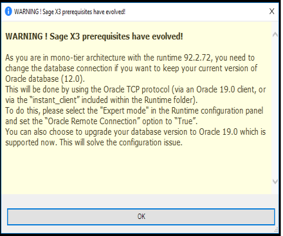

Configuration Console
Index
- General
- Presentation of the Configuration Console
- Basic solution
- Additional X3 Runtime
- Sage X3 Print-server
- Sage X3 Webservice and ADC server
- Web services Connection pools management
- Sage X3 Business Intelligence Server
- Sage X3 Java Bridge Server
- Main X3 test Runtime
- Managing secure database connections
- Documentation server
- Folder import and export with the Console
- Specific actions with the Configuration Console
- Moving table spaces
- Configuring a disconnected database
- Procedure to configure the database manually : Linux & Oracle
- Console with command line
- Appendix
General
Sage X3 Configuration Console is the configuration and administration tool required to implement Sage X3 products.
It is used to configure the Sage X3 components and to establish links between them in order to set up a solution. It produces the configuration files which will be used by the targeted sub-systems.
Since the configuration of the various Sage X3 servers is controlled from a centralized workstation, the installation of complex configurations, namely in multi-tier architecture and in heterogeneous UNIX or Win32 environments, is simplified.
Sage X3 Configuration Console is compliant with all versions of SAGE X3 products starting from V6 and up to V12 versions.
Solution
An installation can take the name of a Sage X3 solution and is characterized by an alphanumeric code with a maximum of 20 characters defined in the Sage X3 Configuration Console.
To define a basic solution, the following components are mandatory:
- Database server
- X3 application server
- X3 main runtime
Optional or linked components may complete the solution:
- Additional X3 runtime
- Sage X3 Print Server
- Sage X3 Webservice and ADC Server
- Business Objects Sage X3 Business Intelligence Server
- Sage X3 Java Bridge Server
- X3 test extra connection server
- X3 documentation server (V6 only)
Those optional components can be shared between several solutions. They can be installed on a single machine (except for the additional FULL runtime that cannot be installed on the same machine with the main runtime); it is equally possible to allocate them on distinct servers.
An administration engine, ADXADMIN service (generally set to port 1895), must also be installed on each of these servers. These administration engines communicate with the Sage X3 Configuration Console workstation, which allows the Console to control all the components stored on each server.
The configuration of the various components is based on the fact that all the configuration prerequisites for the components are respected and that all the components to be configured are already installed on the concerned servers.
Presentation of the Configuration Console
To launch the configuration Console, run the Console.exe process or click the Sage X3 configuration Console icon on the Windows desktop.
The Console consists of:
- A main menu
- A general tool bar
- A left panel with a hierarchical left list of components to manage each entity
- A configuration screen related to each entity
Main menu
| Menu | Shortcut | Action | |
|---|---|---|---|
| Console | Settings... | This is used to modify the Console parameters (debug mode, language choice...) | |
| Console | Exit | Alt+F4 | Is used to exit the configuration console |
| View | Tree view | F3 Key | Displays or not the left side list |
| View | See all modules | Displays all boxes | |
| View | Current module | Only displays the current module box | |
| Tools | Opening the global trace | F4 | Displays the console general log file |
| Tools | Management of the Adxadmin accounts | Opens the ADXADMIN account management window for accounts stored by the console | |
| ? | Console Help | Opens the online help to the Sage X3 Configuration Console | |
| ? | About the Console | Displays the information of the Console version |
When activating the left-list panel or loading a configuration screen, the main menu can be completed by two new entries containing on the one hand the specific menus of the selected entity (module) and on the other hand the action menus of the loaded configuration screen.
General tool bar
| Icon | Action |
|---|---|
|
|
Return to the start-up page of the Configuration Console |
When activating a left-list entity, this tool bar is completed/modified with icons that are specific to the selected entity. They are generally shortcuts to the selected entity configuration screens.
Left list panel
The left list panel is made up of hierarchical list of components corresponding to the Console main entities:
- Solutions
- Sage X3 Print Server
- Sage X3 Webservice and ADC Server
- Sage X3 Business Intelligence Server
- Sage X3 Java Bridge Server
- Sage X3 AdxAdmin Administration Server
- Sage X3 Documentation server
Each component in the left list is a tree of entity components and their linked components.
It also includes a toolbar for importing or deleting entity components. These toolbars are described in the configuration screen specific to each entity.
Configuration Screens
The configuration screen is made up of three elements:
- The action menu: this menu completes the main menu; it contains shortcuts to the possible actions that are loaded depending on the selected component.
- The action tool bar: this tool bar is directly placed above the configuration screen and under the general tool bar. This bar contains shortcuts to frequent actions of the loaded screen.
- The Display / Input panel: it is the right side of the Console screen.
Basic Solution
The Basic solution is made up of the three mandatory components required for running a Sage X3 product: the database server, the X3 application server and the X3 main runtime.
Create the Solution
To create a solution, open the Solutions component on the left list panel, and click the New Solution button of the general tool bar.
The following dialog box entitled Create a new solution is displayed; it enables to build the basic solution using the components that have already been installed on the servers:
Perform the following steps:
- Click the New button.
- Enter the name of the server where the Application and Runtime components are installed.
- Enter the port, user, and password for the AdxAdmin service. The AdxAdmin default port is 1895.
- Click the Next button.
The process starts with the selection of the application component that refers to the product and determines the solution type. The following dialog box entitled Create a new solution is displayed:
To select the application component to be used in your solution:
- Set the cursor on the selected Application component.
- Click the Next button.
Then the Console submits a list of main runtimes available for your solution in the following dialog box:
To select the main runtime to be used in your solution:
- Set the cursor on the selected Runtime component.
- Click the Next button.
The next step is to choose via the following dialog box the configuration method for the database to be used by the solution.
Select one of the two proposed configuration methods and click the "Next" button.
- For Configuration by the console method, data server is configured with a Sage X3 AdxAdmin Administration server. The Create a new solution dialog box is displayed again requiring new information:
- Click the New button.
- Enter the name of the server where the Database component is installed.
- Enter the port, user, and password for the AdxAdmin service. The AdxAdmin default port is 1895.
- Click the "Next" button.
Then, a new dialog box is triggered where all database components available on the indicated server are listed. Select a database component from the list and click the Next button.
For an Oracle database on a Linux platform you should use the Manual configuration method.
- For Manual configuration method, data server will not be configured with a Sage X3 AdxAdmin Administration server as it may has been already created, and therefore cannot be accessed through an AdxAdmin administration engine on the server.
The following dialog box is displayed:
To enable Sage X3 AdxAdmin Administration server to connect to the data server, you need to enter all the required settings to create
a virtual database component that matches your disconnected database.
For further details about database setup, refer to the Specific actions with the Configuration console paragraph.
The last phase enables you to enter an identifier, a description and a message (optional) defining your new solution. If you enter a message, it will be displayed each time the solution is loaded onto the Console. This can be useful if you manage many solutions, adding a message on opening critical solutions is intended to avoid confusion with test solutions.
Once this information is validated, the Console displays the solution configuration screen. The setup components of the servers for the solution are loaded with the components that you have selected.
Configure the database server
To install the solution, it is necessary to load and configure the mandatory Database server component first. The Console is used to reference a database considered as disconnected.
The principle is to create a solution in which the database server cannot be accessed from the Console. For more information on adding a disconnected database, click here...
The component status is Idle, on exiting the configuration it becomes Active.
To configure the database server component, enter the mandatory parameters.
Only the instance in the case of SQL Server must exist beforehand.
The Configuration Console creates the database (Oracle or SQL Server) and the ODBC source (SQL Server).
Note:In the Configuration Console, the database must be configured with an account that belongs to the DBA group.
SQL Server Database Parameters
- Enter Db login user code and password of the instance sysadmin user.
- Set a password for X3 folders schemas.
- Select the Sql Server instance.
- Enter a database name: maximum thirty alphanumeric characters, displayed in lowercase.
- Select the DBMS tools installation path: osql.exe has been deprecated and replaced by sqlcmd.exe. The entered path should include a tool folder where sqlcmd.exe is located.
- Select the ODBC tool path: sqlcmd.exe and bcp.exe must be in Binn directory located on the path.
- The system fills the DBMS version, Data directory path, Scripts directory path and Transactions log directory path fields.
Oracle Database Parameters
- Define the Oracle SID: maximum eight alphanumeric characters, displayed in uppercase.
- Define a connection user name as SYSDBA: maximum 250 alphanumeric characters, the default value is SYS. This field is accessible for a component version that is equal to R090 or above, otherwise the default value is considered.
- Enter a password for the SYSDBA user: minimum 8 and maximum 250 alphanumeric characters, forbidden characters are ^,$,%,\,/,",',-,@,*,!. The password should fulfill the complexity requirements of Oracle server.
- Define a name for the DB user with SYSTEM privilege: maximum 250 alphanumeric characters, the default name is system. This field is accessible for a component version that is equal to R090 or above. Otherwise the default value is considered.
- Enter a password for the DB user with SYSTEM privilege: minimum 8 maximum 250 alphanumeric characters, forbidden characters are ^,$,%,\,/,",',-,@,*,!. The password should fulfill the complexity requirements of Oracle server.
- Enter a password for X3 folders schemas: maximum 250 alphanumeric characters, forbidden characters are ^,$,%,\,/,",',-,@,*,!. This field is accessible for a component version that is equal to R090 or above; otherwise the default value tiger is considered.
- Indicate the DBMS tools installation path; it corresponds to the ORACLE_HOME directory. Other remaining fields will be automatically filled.
Microsoft Azure ElasticPool Database Parameters
Starting from the 2.55 version of the Configuration Console, a new database 'Microsoft Azure ElasticPool' is supported. It requires the usage of X3 Runtime R095 version and upper.
The manual configuration method is to be used for this database type.
A new Requirement has been added to support Runtime R095 + SQLServer :
MS PowerShell 7.2 and the SQLServer module
Installing PowerShell on MS Windows:
https://docs.microsoft.com/en-us/powershell/scripting/install/installing-powershell-on-windowsAfter PowerShell 7 installation, install the SQLServer module with this command:
pwsh -Command "Install-Module -Name SqlServer -Scope AllUsers -force"
Installing PowerShell on Linux:
sudo yum install -y powershell
sudo pwsh -Command 'Install-Module -Name SqlServer -Scope AllUsers -force'
Configuration
Once these parameters are entered, click the Save button of the Configuration Console.
To start the configuration of the database server, click the Data button. A dialog box displaying the different configuration options appears.
Three options are proposed:
- Script generation: This option generates database creation scripts in the script directory of the database component on the server. It can be used to introduce modifications to the scripts directly via the "Database scripts" menu entry by clicking the corresponding icon on the general tool bar.
- Script execution: This option launches scripts that are located in the script directory of the component. It is used to subsequently run scripts that have been modified by means of the 'Script generation' option.
- Full configuration: This option links the two previous options into one single step but without any possible script modification. Executed scripts are those that are automatically generated.
To configure the database component, select the Full configuration option and validate.
When exiting the configuration log screen, the component status becomes Active if the database configuration process ends successfully without any errors.
In order to solve the most common database configuration problems, refer to the To know... paragraph.
Configure the application and the main runtime components
The configuration of these two components depends on the correct configuration of the database server component.
By a single action, the configuration of the application server and the main runtime is carried out.
The application and main runtime must be configured in the console with the account provided by Sage.
If your Syracuse server is in 12.15 (2022 R2) version or higher two possible protocols are available to operate resource files of Sage X3 / Geode or HRM applications:
- the Apache http web publication server,
- or the internal X3 protocol (sadfsq) which is highly recommended.
For all Syracuse server versions prior to V12.15 (2022 R2), only the http server (Apache) is possible.
The value of the parameters needs to be checked first:
Sage Application Server
- Use Apache: this parameter indicates which protocol to use. If the value = false, the internal X3 protocol (sadfsq) will be used; otherwise the Apache http web publication server is used and the adequate installation path should be defined in the following field.
- Apache installation path: it specifies the installation path of the Apache http web publication server when the value of the previous parameter = True.
Note concerning solutions that have been created on prior versions of the Configuration Console
On configuration Console version 2.54 and higher, when you display for the first time any existing solution that has been created using prior versions of the console, a warning message that requires you to save the solution or reconfigure the application component is triggered, as per the following screenshot:
This required action is necessary to fill in a new parameter for the choice done between the two protocols (Apache / SADFSQ) with the adequate value corresponding to 'Apache' choice being the sole option to all previously created solutions on prior Configuration Console versions.
Note concerning the Apache setup
For configurations intended for a large number of users, or for the use of the HR portal module, it is possible to configure and optimize the Apache process model parameters in the advanced parameters of the application component. These parameters can be accessed in the Application server->Web parameters->Process template after clicking the Expert mode icon of the Application panel header.
The process model category depends on the target architecture and the configuration of the Apache software. To activate the Apache setup options, the Configuration of the process template parameter in the Web parameters category must be switched to the True value.
Note: From version 2022 R2 onwards, the use of Apache server is deprecated. It should only be installed in case your Sage X3 install requires one of the following applications:
- JavaWeb (VT) Server
- JavaBridge
- SAP Business Objects
- Sage X3 HR version 9 User Portal
Warning
It is recommended to use a dedicated Apache installation when using the Apache process model parameters in order to avoid possible problems with the values of another solution using the same Apache server.
Sage X3 Runtime
- Sage X3 service port number:it specifies the port to be used by the main runtime service.
- Sage Serial path:(up until V6 version); it specifies the local path to recover the Sage license and copy it onto the remote server.
- For a Distant database (up until the V6 Version, these parameters are only available in Expert mode panel):
DBMS client path:ORACLE client installation path. It is necessary to click on this setup to enable the Console to search for possible values. If the ORAHOME variable is defined, the Console proposes that its value be recovered. Make sure that the version of your DBMS corresponds at least to the version of your DBMS server.Name of the link to the remote database:Access link to the database. This value must be left blank. On exiting the configuration this parameter will have as its value the name of the Runtime component.- The user login and password of the account to be used to create and run the service.
Starting from Runtime V095 version and upper:the Powershell component is a prerequisite for the proper functioning of the runtime with all database servers that are managed by the Configuration Console _i.e._ Oracle, SQL Server, and Azure SQL elastic pools. Regardless of where the runtime is operational, this new requirement applies to both Windows and Linux environments.
The minimun compatible Configuration Console is the 2.55 version; it handles the installation of PowerShell component. So, when configuring a new X3 solution using Runtime V095 or upper version, the configuration console displays a new field in the runtime panel where the Powershell path is to be entered:
The runtime configuration process launches a verification mechanism to check PowerShell requirements before creating the new service. A warning message is triggered when the PowerShell component is not found on the same server where the runtime service is about to be configured.
For X3 solutions based on Microsoft SQL Server or Azure SQL elastic pools: an additional SQL Server module for PowerShell is required. It should be installed by launching a PowerShell command as shown in the following warning message that is triggered if the PowerShell component is not found.
For X3 solutions based on Oracle Server: the runtime configuration process launches the following warning message if the PowerShell component is not found on the server that will host the runtime:
The runtime configuration process will be carried out only when instructions displayed in the warning panel are well met.
Runtime Upgrade
It is important to point out that Configuration console 2.55 is the minimum prerequisite version to manage Runtime V095 version and above. For existing X3 solutions, the upgrade process of runtime components to V095 version or upper requires the availability of PowerShell component on the same server as the runtime. A new field is displayed in the runtime panel where the Powershell path is to be entered for upgrading a runtime connected to a database server.
SQLServer or Azure SQL elastic pools databases with Runtime V095 version and above
The SQLServer module is required on the same server as the runtime, exactly as stated in the upper paragraph about the installation of a new runtime. An update script for SQLServer module is to be executed as shown in the following warning panel before proceeding with the upgrade process:
PowerShell Scripts
A new menu entry "Maintenance" has been added to the 'Solutions' drop-down menu of the horizontal tool bar. It lists all update scripts that are available for the displayed X3 solutions using runtime version V095 and upper, and enables end users to launch them manually for maintenance purpose.
Special Case regarding Oracle Database
It is important to point out that latest upgrade of Sage X3 Runtime abide by new security requirements imposed by recent database versions.
So, for Oracle 19.0 database, the compatible Runtime versions to install are from 92.2 onwards.
To ensure compatibility with older Oracle database versions on mono-tier architecture, the Configuration Console requires database to be considered as virtually remote in order to
enforce using the Oracle TCP protocol of the "instantclient_19_3" folder in the Runtime repository.
So, while in mono-tier architecture using a Runtime version from 92.2 onwards, if you are configuring a new solution or updating the runtime component of an existing solution,
the Configuration console detects the Oracle database version.
For versions prior to Oracle 19.0 database, the following warning message is triggered:
Clicking the "OK" button displays the "Oracle Remote Connection" option to set to "True":
You need to enter the InstantClient path if the parameter "runtime.odbc.dbhome" is empty. Note that the X3 Runtime includes InstantClient in its folders.

Note: For Oracle database, the Console will create its own `TNSNAME.ORA` file in the "Runtime" directory of the solution. In this way, the original Oracle file will not be affected.
To launch the configuration of Application and main runtime components, click on the Application button.
If you update your version on the last X3 Runtime version, R093.0, you will have a warning. You'll need to execute the listed scripts before continuing the update process.
You can download the SQL script, then you have to edit it and check whether there is input parameters to enter according to the application you are configuring.
For example, on "update_ora_R92_3.sql" script file the parameter DOSSREF should be attributed a value as per the following explanation stated in the upper part of the script itself:
REM INPUT Parameters : &1
REM &1 = X3 for X3 (ERP) product
REM &1 = PAIE for X3 (HRP) product
REM &1 = GEODE for X3 (WR) product
REM ----------------------------------------------------------;
DEFINE DOSSREF=&1
Once the script is compatible with your application, you can include it with other scripts on your Oracle Server to be launch on a started Oracle
instance using an Oracle account with DBA role as "sysdba".
Example:
sqlplus / as sysdba @update_ora_R92_3.sql
On exiting the configuration log screen, the ADXD process of the main runtime is already started and the status of both components becomes "Active" if the configuration process ends successfully without any errors.
At this stage, the solution can be used. It is therefore possible to connect via the web browser (from the version 7) or via the Client Sage X3 workstation (up until the version 6).
To configure security to the filesystem, file "configRuntime.json", please go to " Sandbox configuration file / filesystem security"
Additional X3 Runtime
Main or Full runtimes
There are two kind of architecture depending of the type of the additional runtimes.
- All the additionnal runtimes have the type MAIN (V12 only) (recommanded architecture)
Prerequisite : For this architecture the Application component must be installed in cluster mode on a shared folder using an UNC network path. For further information, read the application server installation procedure. After the runtimes installation : In the X3 Solution entity, the "Enable application cluster" checkbox must be set - All the additional runtimes have the type FULL
To implement an additional X3 runtime, it is necessary to:
- Load an additional runtime component
- Configure the additional runtime
Loading
To load an Additional runtime component, click the **New** button, in the **Runtimes** tab.
For more information on the component loading dialog box, click here...
The component status is Idle. On exiting the configuration it becomes Active if the configuration process ends successfully without any errors.
Configuration
To configure the additional runtime component, enter the mandatory parameters:
- Sage X3 service user account:Name of the user account starting the Sage X3 service (By default LocalSystem for Windows, and root for UNIX)
- Password of the user account:Password of this account
- DBMS client path:(up until V6 version) ORACLE installation path. Make sure that the version of your DBMS corresponds at least to the version of your DBMS server.
- Multi Main rutime
A new field UNC network path is mandatory. It is the network path of the Application folders directory. It is automatically managed if the Application component has been deployed as a shared folder (Windows only) otherwise it can be set manually (using the expert mode).
On the Application server panel of the Configuration console main screen, the network path and the installation path are clearly defined (highlighted in yellow).
These network and installation paths must be the same for all the runtimes while creating the symbolic link to the folders directory.
Refering to the above screenshot, let us consider the 'Properties' panel of the folders directory for this solution and compare it with the symbolic link that has been created for each runtime installed on a different server .
Properties of the folders directory- On the 'General' tab: the "Location" corresponds to the Installation path that figures on the Application server panel of the Configuration console main screen.
- On the 'Sharing' tab: The "Network path" is the share name of the folders directory on the host server. It is the UNC network path that figures on the Application server panel of the Configuration console main screen.
- On the 'General' tab: the "Location" is the path where the symbolic link has been generated. It is mandatory to be exactly the same as the installation path of the folders directory. This implies that the volume, repository, directory and filename should exist on the server hosting the symbolic link.
- On the 'Shortcut' tab: the "Target location" is to the server of the Application folders; while the "Target" refers to the Network path as shown on the 'Sharing' tab of folders directory properties.
On Windows, the symbolic link to the folder directory will be created automatically by the Console on the runtime server.
On Linux, the Console just verify that there is a valid access to the files stored in the mounted path.

In the Data-Application tab all the Main runtimes are displayed
At the bottom of the screens, the Default runtime allows to select which main runtime will be used by the console.
NB: For each action on folders, the Console allows to choose another main runtime.
Example for the import folder action:
To launch the actual configuration of the Additional runtime component, click the Configuration button:
- The service must be created on the port chosen for the configuration of the main Runtime. If this port is already taken on the additional Processing Server, the configuration cannot be done..
- When exiting the configuration, the ADXD process of the additional runtime is created and started. The component appears in the left-hand panel of the screen and in the list of runtimes. Its status will become **Active** if the configuration process ends successfully without any errors.
The runtime can now be used. It is now possible, using this server, to connect to the application folders.
NB: After adding the runtime, an update of the publications can be necessary. In such a case, the solution must be published again for the Sage X3 Web Server, the Sage X3 Java Bridge Server and the Sage X3 Print Server.
Sage X3 Print Server
The Sage X3 Print Server component is used to assign the running of the reports and printouts to a dedicated and manageable server.
Sage X3 Print Server installation with Oracle 12 and 19c
Up to the Sage X3 Print Server version 2.19 or to the Sage X3 Console version 2.46
To use SAGE X3 PrintServer with Oracle 12 and 19c with a Sage X3 PrintServer <=2.19 or a Sage X3 Console <=2.46, please, follow this documentation : Print server ODBC driver for Oracle
From the Sage X3 PrintServer version 2.20 and the Sage X3 Console 2.47
No more manual process is required to manage Oracle Datasource with InstantClient
"Basic Package", "SQL Plus Package" and "ODBC package" from Oracle are automatically installed by the PrintServer setup.
The setup installs Oracle Instant Client on the station on demand.
Instant Client ODBC driver is installed in the X3 PrintServer root directory.
Ex: the root dir is "C:\Sage\SafeX3\EDTV2\EDTSRVFRDEP\srvedit\", the ODBC client is installed in C:\Sage\SafeX3\EDTV2\EDTSRVFRDEP\srvedit\instantclient_19_5The entry "Oracle InstantClient_19_5" is available within the ODBC datasource manager after installation.
Implement the Print Server
To implement the Print server, it is necessary to:
- Load the Print server component
- Configure the Print server
- Publish the solution for the Print server

Loading
To load this component, click on the Add button of the Print servers left list.
For more information on the component parameters entry panel, click here...
The Console loads the different parameters of the Print server component.
Note that the value of the status of the Print server is "Idle" and will switch to "Active" once the configuration is done.
Configuration
To configure the Print server component, enter the mandatory parameters:
- srvport:TCP port to which the print server is listening
- svcuser:Identifier of the system account used to launch the Windows service Do not use the Localsystem account because no printer is attached to it.
- svcpassword:Password of the system account used to launch the Windows service.
- odbcuserdsn:Type of the ODBC datasource to generate in configuring the Print server.
From the Sage X3 PrintServer version 2.28 this parameter is displayed on the principal panel of the Print Server profile configuration
while on previous versions it was located on the Expert mode panel.

This parameter is closely related to user rights on the workstation. By default, the defined value is "Off" which means that the ODBC data source created while configuring the Print Server service is of type "System". This requires that the Windows user of the logon account for this service is granted administrator rights; otherwise the System DSN creation fails. So in case of restricted user rights, you need to activate the ODBC User datasource parameter by switching the value to "On" in order to create a User DSN specifically dedicated to this same Windows user.
To launch the actual configuration of the Print server component, click the Configuration button.
On exiting the configuration, the component status is "Active", and the 'Safe_X3_SE_V2DEFAULT' service is created but not started; it will be launched automatically on the first solution publication. It is neither useful nor recommended to start this Windows service if no solution has been published.
Solution Publication
To publish the solution, select the Publications tab of the Print server component.
Click the Add button of the toolbar and select the solution to publish in the list of the solutions managed by the Console.
Once the solution has been added to the publications of the print server, select the folders of the solution to be published via the checkboxes and validate by clicking on the "Apply" button.
If you have installed another ODBC driver that can disturb the Print Server, you can force within the Console (in the 'ODBC Source' tab) the ODBC driver to be used, for instance the InstantClient_19_5 :
After this, you can publish the Solutions and folders with the Console.
The installation of the Print server is complete.
Expert Mode
Print processes management:
all.processsrc.nbmaxjobs: maximum number of Print requests.
This parameter sets the maximum number of print requests that the PrintServer will be allowed to run in parallel.
This setting should be adjusted based on the average number of requests to submit and the overall availability desired for the system.
When the maximum number of running jobs is reached (see 'print.processes.nbmaxproc'), the server put the new print requests in a queue of pending requests.
These requests are then unpaved when one of the print processes is in the "available" state again.
- print.jobs.purgetimeproc: Time before automatic deletion of an untreated print request (expressed in minutes).
Condition for purging a request: the printout is not in 'execution' mode, it has exceeded the limit or it is in error.
Please note: printings in current execution are not taken into account. They are processed in the purge at the 'processus' level.
print.jobs.SuccessfulJobsStatusRetention:Time before automatic deletion of a print status, expressed in minutes. Default value: 0 minutes.
You can enter the value "0" to avoid keeping Condition for purging a status from the queue: The print process completed with success status, and timeout expressed here has been exceeded.
Available from PrintServer 2.29 (2023.09 - 2023 R2)
print.jobs.FailedJobsStatusRetention: Time before automatic deletion of a print status, expressed in minutes. Default value: 15 minutes.
Condition for purging a status from the queue: the printout failed, it is not in 'execution' mode after more than the delay expressed here.
Available from PrintServer 2.29 (2023.09 - 2023 R2)
print.processes.nbmaxproc: Maximum duration before deletion of a blocked print process (expressed in minutes).
Ex : process AdxImpNet.exe. Default value max="20".
print.processes.maxjobsbyprocess: The maximum number of jobs that a "AdxImpNet" print process can handle before committing suicide.
Default value="10".
These parameters can avoid memory leaks that SAP Crystal Report can cause.
Multi-instances Print Server
From the Sage X3 Print Server version 2.24 and Sage X3 Console version 2.51, you can run on the same host multiple instances of the same PrintServer.
Benefits of a printing cluster:
- Several service ports for the same print server
- Each service port can be run by a different Windows user
- Locale of a Windows account user is applied on the delivered X3 reports via the service port
A service port can be dedicated to a particular X3 user or for a specific printing task. An instance could be dedicated to previews generations, and others instance to real and long print process.
- A supplementary queuing capacity for reporting jobs
- Allow multiple printing services without having to install new physical or virtual servers and pay for MS Windows licenses.

Click the Services icon of the configuration console general tool bar to display a grid where all Windows services of the Sage X3 Print Server are listed.
- The first column shows the Windows service display name concatenated with the service port number
- The second column displays the name of the Windows service
- The third column indicates the service status
- The fourth column reads the print server name concatenated with the instance profile name
- The fifth column shows the Windows user account that controls this service.
Instance Profiles
Configuration console version V2.51 and higher enables the Administrator to add new Print server instances.
Each instance has its profile settings that specify the SAGE X3 solution folders and the Windows service port that publishes them.
The Service port is identified by a name, a port number, a path to executable, and a Windows user account to connect with.
New buttons: Add server profile and Remove server profile, have been added to the configuration console general tool bar when the 'Sage X3 Print Server' panel is active, as shown below:
DEFAULT Profile
After implementing the Print server component, the first service configuration and folders publication constitute the default print instance; and its settings represent the default profile identified by 'DEFAULT' on the tree view display panel. The DEFAULT profile is considered as the template for future profiles to be created.
Add a server profile
Click the Add server profile icon. This button is available on the configuration console general tool bar when the 'Sage X3 Print Server' panel is active. It is equally available on the 'Sage X3 Print Server' panel tool bar as well as on the right-click action menu. On the display panel, enter the name of the new profile to be created and confirm. If the new profile is meant to apply the French locale on the reporting job, an adequate name can then be used to identify it. The name 'FRA' is entered as follows:

The DEFAULT profile serves as template. It is duplicated to create the new profile named 'FRA' for a new print instance on the same Sage X3 print server. In the display panel, the tree view shows the X3 print server and all profiles with their respective published solutions and folders.
The newly created profile name is displayed in orange color as service is in an idle status while related folders are already added and published. The service port is automatically positioned on the next available number and set on the Windows user account of the default profile service.
All settings of the newly created profile can be modified before launching the configuration process that activates the profile and starts the service. An active profile is displayed in the tree view in the system color on a blank background.
Update a server profile
A click on the 'Print server publications' button of the configuration console general tool bar or on any solution or folder entry of the print server tree view displays all solutions with their respective folders that are published on different instance profiles of the Sage X3 Print Server.
The far right-hand column of the 'Publications' grid indicates the instance profile that manages the publication. When the cursor is positioned on a publication entry, the multi-tab lower panel is activated. The left-hand tab lists all folders of the corresponding solution where the checkbox indicates the already published folders of the instance profile. End user can modify the checkbox value and click the 'Apply publication' button to update the published folders list.
New solutions can be added and get their folders published to an instance profile. A click on the 'Add solution' button of the 'Publications' panel tool bar displays a new grid where all X3 solutions already configured on the same configuration console are listed in a grid. Position the cursor on the X3 solution entry and select the instance profile from the drop down list. The confirmation triggers the publication process and generates a new entry in the 'Publication' grid. Publication of folders can follow as previously described.
Remove a server profile
A profile can be completely removed from a X3 print server via the Remove a server profile icon. This button is available on the configuration console general tool bar when the 'Sage X3 Print Server' panel is active. It is equally available on the 'Sage X3 Print Server' panel tool bar as well as on the right-click action menu.
To perfom this operation, you need to position the cursor on the selected server profile, and confirm. The process triggers a series of operations that unpublish folders, liberate added solutions and stop the Windows service port and disable it. At the end, the removed server profile and all related settings have completely disappeared from all Print Server panels of the Configuration console.
Remark: the DEFAULT profile cannot be removed via this process.Services
Several PrintServer services can run on the same host.
Here, on the same server, we have 3 instances of the X3 PrintServer, 3 profiles : DEFAULT, FRA, PREVIEWS
You can dedicate the instances to different purposes : specific languages, specific usage, reduce the waiting time when an instance handles very long impressions, and so on.
SAFE_X3_SE_V2DEFAULT
Safe_X3_SrvEdt_V2_EDT_DEFAULT
c:\Sage\SafeX3\EDTV2\EDTSRVFRDEP\srvedit\AdxSrvImp.exe /cfg:DEFAULT
SAFE_X3_SE_V2FRA
Safe_X3_SrvEdt_V2_EDT_FRA
c:\Sage\SafeX3\EDTV2\EDTSRVFRDEP\srvedit\AdxSrvImp.exe /cfg:FRA
SAFE_X3_SE_V2PREVIEWS
Safe_X3_SrvEdt_V2_EDT_PREVIEWS
c:\Sage\SafeX3\EDTV2\EDTSRVFRDEP\srvedit\AdxSrvImp.exe /cfg:PREVIEWS
In the example, we have 3 services running the PrintServer on the same station, on 3 different profiles.
Each profile manages a specific configuration, stored in the XML config files, adxeditionserverconfig.xml and adxeditionserversolutions.xml.
After configuration, you can see in Syracuse several PrintServer available, on the same server but running on different ports.
To have more information about the PrintServer, please go to Print Server Presentation and Operation Guide
High Availability and Print Server
The PrintServer 2.23 and superior versions support multi MAIN RUNTIME configurations but do NOT support clusters of Print-servers behind a proxy.
We can have several print servers, or multiple instances of PrintServer on the same host, but the selection of a PrintServer is manual for the final user.
<sol id="CLUSTERMM" cap="" multimain="1">
multimain : [0 - 1 or empty]
Set value = 1 if the solution runs a multi-runtime environment.
Print Server enhancement for high availability, from Console 2.50 and PrintServer 2.23.
Note the your solution needs a multi "MAIN" runtimes. That won't work with "FULL" X3 runtimes.
If this attribute is set to "1", the PrintServer will get the report file from the runtime that does the request in order to assure an high avaibility system. The mechanism avoids systematic usage of the primary MAIN runtime.
This configuration file is automatically generated by the Console on multi-main runtimes X3 solutions, while (re-)configurating the PrintServer.
In our example, we can find the default MAIN runtime : matrixw19
<app id="CLUSTERMM" folder="SEED" host="matrixw19.sagefr.adinternal.com" port="20101" type="MAIN" />
<app id="CLUSTERMM2" folder="SEED" host="matrixw16sql17.sagefr.adinternal.com" port="20101" type="MAIN" />
<adxcnx host="matrixw19.sagefr.adinternal.com" port="20101" psswd="" usr="" />
If we set multimain="1" for this solution, the PrintServer will search the runtime which launched the request, and will only communicate with this runtime.
The default runtime is matrixw19, but matrixw16sql17 launched the print request : the PrintServer will only talk with matrixw16sql17.
Starting the V2.56 version of the Configuration Console, the publication process of folders belonging to a multi-main runtimes solution will recreate the Print server configuration XML file "adxeditionserversolutions.xml". The value of the 'multimain' parameter is set to "1" indicating a multi-main runtimes connection to the published folders. The end user can modify manually this parameter and set its value to "" if he/she wants to force the mono runtime functionning mode. However, any subsequent reconfiguration or publication processes will recreate the XML configuration file and set again the value of the 'multimain' parameter to "1" taking into consideration that the published folders belong to a multi-main runtimes X3 solution; the fact that makes the end user lose the specific setup functionning mode. In that case, if a mono runtime behaviour is required, the end user has to set the value of the 'multimain' parameter to "0" that will be spared when any further reconfiguration or publication processes recreate the XML configuration file.
To display the status of the Print server connection to the application folders, a new column labeled 'Multi-main runtimes' has been added to the "Publications" grid as follows:
Update
To update the print server, follow the steps described below:
- Stop the print server service via the Console in the Print server Administration tab.
- Install the update (check out the installation procedures for further information) in order to replace your version with the new one.
- Refresh the print server configuration screen in the Console. The update should automatically be detected by the Console.
- Click the Configure button to complete the update.
- Verify that the service has been restarted following on from the configuration.
Deconfiguration
To deconfigure the print server, follow the steps described below:
- Stop the print server services via the Console in the Print server Administration tab.
- Unpublish all the solutions.
- Click the **Deconfigure** button in the Configuration screen of the Print server component.
- Uninstall your component on the server.
Sage X3 Webservice and ADC Server
To implement the Webservice and ADC server, it is necessary to:
- Load the Webservice and ADC server component
- Configure the Webservice and ADC server
- Publish the solution for the Webservice and ADC server
Loading
To load the Web server component, activate the left list Sage X3 WebService and ADC Server and click on the Add button.
For more information on the component loading dialog box, click here...
The Console loads the component and acquires the different Web parameters that appear on the right-hand panel of the page.
Note that the component status is "Idle". This value will switch to "Active" once the component is configured.
Configuration
To launch the actual configuration of the Web presentation server component, click on the Configure button.
On exiting the configuration, the component status is "Active", and the 'adonix_print_server_DEFAULT' service is created and launched if the configuration process is successful.
The Web server is configured, it is now necessary to publish the solution.
Solution Publication
Pre-requisite to a solution publication : the configuration of the Apache server of the solution
To configure the Apache server of the application server, go to the 'Application server' field in the solution management panel and enter the "Apache installation path" setup. Click on the Web publication button to launch the http server configuration for the application server. If no value is proposed, it is pointless to continue with the publication. You need first to resolve the problem linked to the installation of Apache on the server.
It is possible to check the configuration of the HTTP server by launching Internet Explorer then the following URL:http://[servername]/[AliasOfSolution]/DOSB/GEN/FRA/FENW/FUSER.xml
Note:
The publication alias is in the form of 'Adonix_NameOfTheSolution', it is a case sensitive entry.
To publish the solution, select the Publications tab of the Sage X3 Web Server component .
Click on the button Add... and select the name of the solution to be published.
High availability and VT100 ADC Server
Configure ADC Server with multiple X3 runtimes to balance load, performance and fault tolerance.
Starting JavaWeb version 2.42, and version 2.57 of the Configuration Console, VIP/LoadBalancers are managed within ADC Server.
The goal is to bind an ADC server to multiple X3 runtimes, and to use a TCP load balancer facing the X3 runtimes.
The user sees one address only, which is a proxy that will be in charge of managing the load and the possible failures of the runtimes, Http servers or print servers.

You need to switch to "Expert mode" in the Configuration page to select "General settings / allvirtualips" parameters.

We are in a multi-runtime X3 solution:
Two X3 Runtimes:
1. FRPO402328: 20124
2. FRPO402328: 20125
{kind=link}
We have previously configured our loadbalancer/proxy GoBetween (external software) running on port 30000,
in order to redirect this port 30000 to TCP ports 20124 and 20125 of the solution's X3 runtimes.
Our X3 solution is named LOCALGEODE, and your proxy is running on FRPO402328:30000
We enter the following value in the all.virtualips.trt.vipdefs parameter to redirect Runtimes from the LOCALGEODE Solution to the FRPO402328:30000
LOCALGEODE:FRPO402328:30000;
If we have several X3 Solutions to manage, we can add other configurations:
LOCALGEODE:FRPO402328:30000;OTHER_X3_SOLUTION:OTHER_PROXY:31000;
Example with the "GoBetween" proxy/loadbalancer.
Third party software, equivalent to "HAProxy"
# FRPO402328
[servers.FRPO402328]
protocol = "tcp"
bind = "FRPO402328:30000"
[servers.FRPO402328.discovery]
kind = "static"
static_list = [
"FRPO402328:20124 weight=40 priority=1",
"FRPO402328:20125 weight=100 priority=0"
]
In the same way as for Runtime X3 servers, it is also possible to configure a VIP server for HTTP servers:
{kind=link}
Same principle for X3 PrintServers:
{kind=link}
After publishing the configuration by the X3 Console, the "x3world.xml" file will only list the VIP server address.
Example with our loadBalancer on port 30000
<x3application hostname="FRPO402328" folder="SEEDWH" lib="X3Folder=[SEEDWH]" generate="yes">
<service portnum="30000" default="yes" applisrv="yes" srvcnx="LOCALGEODE_frpo402328.sagefr.adinternal.com_20124" user="CRYPT:tesgrQrtvaTccrgruqpccqgrTkuvarzkTf" pass="CRYPT:wdoqmRddo2xo2tkuvaVcc" />
<service portnum="30000" applisrv="yes" srvcnx="LOCALGEODE_frpo402328.sagefr.adinternal.com_20125" user="CRYPT:tesgrQrtvaTccrgruqpccqgrTkuvarzkTf" pass="CRYPT:wdoqmRddTdoqo2xo2tkuvaVcc" />
</x3application>
If a VIP/LoadBalancer server is configured, the VT100 screen of the solutions will present only one line per folder,
with the server and the port of the VIP server, and will hide the list of the different X3 Runtimes.
If information is passed as arguments such as Do=Dossier&ho=runtime&poport in the connection string of the VT100 terminal,
the JavaWeb X3 server will look for a match. If the entered information is found, it will switch directly to the login window. Otherwise:
- If the solution is not configured with a VIP, it will display the folder selection window.
- If the solution is configured and linked to a VIP, the
ho=runtime&poportparameters will be ignored and replaced by the values of the VIP server.

We can see below, on the VT220 terminal, a list of applications LOCALGEODE, and two folders (SEEDWH and SEEDSH2), both linked to the proxy address FRPO402328:30000.
Update
To update the Sage X3 Webservice and ADC Server, follow the steps described below:
- Stop the services of the Sage X3 Webservice and ADC Server via the Console in the server Administration tab.
- Install the update (check out the installation procedures for further information) in order to replace your version with the new one.
- Refresh the configuration screen of your Sage X3 Web Server in the Console. The update should automatically be detected by the Console.
- Click on the configure button to complete the update.
- Verify that the services have been correctly restarted following the configuration.
Deconfiguration
To deconfigure the Sage X3 Webservice and ADC Server, follow the following steps:
- Stop the services of the Sage X3 Webservice and ADC Server via the Console in the server Administration tab.
- Depublish the web services connection pools connected to the solution
- Depublish all the solution published on the Sage X3 Web Server.
- Click on the deconfiguration button.
- Uninstall your component on the server.
Web Services Connection Pools Management
Presentation
The Console is used to configure the groups of web-service connections for the Sage X3 Web Server. An additional tab is available within the Sage X3 Web Server configuration panel.
To access the configuration of a group of connections, the Sage X3 Web Server must be configured and the services launched. If it is not the case, the tab is not active.
It is mandatory to publish the solutions in order to configure the group of web-services connections.
In fact these are configured to establish a physical connection to a solution folder via the configured runtime of the solution.
Description of the tab
The configuration screen of a web-service connections group is principally modified using three components
-
The tool bar, which makes possible :
- The addition or deletion of a web-service connections group in the tree structure.
- The execution of available actions in a group of connections depending on its status (launch, stop, re-launch, suspend).
- The Review of the Sage X3 Web Server configuration.
-
The configuration of the tree structure visualization :
- This tree structure represents the Sage X3 Web Server configuration and the configuration of the group of web service connections. The following are found, in order :
- the X3World node that is the central point of the Sage X3 Web Server configuration.
- the solutions published on this Sage X3 Web Server.
- the folders published on this Sage X3 Web Server for the selected solution.
- the runtimes configured for the solution.
- the groups of web-service connections connected to the process server for the solution.
- the physical connections to the selected connection group.
- This tree structure represents the Sage X3 Web Server configuration and the configuration of the group of web service connections. The following are found, in order :
The possible actions on a group of connections are determined by its status; moreover the addition, deletion and modification of parameters require the saving of the new configuration on the server with the "Save" button, which becomes active after any configuration change.
The list of the configurable parameters for a group of connections :
- Double-click on a parameter to modify its value using an entry help assistant. An expert mode is available to configure more of the settings and the information button displays the setup definitions.
Adding a group of web-services connections
To add a group of web-service connections, select a node type runtime from the configuration tree structure.
The "add group of connections" button becomes active in the tool bar, a group is connected to the selected runtime by clicking on this button.
Enter all the visible parameters in the parameters framework then click on the "Save" button.
Note: it is possible to add/delete and modify several connection groups and to save the configuration at the same time with the "Save" button.
Deletion of a web-service group of connections
To delete a group of web-service connections, select the group icon in the tree structure then click on the group deletion button in the tool bar. The group icon changes, which indicates that the group is in deletion mode. It is then possible to save the modification by using the "Save" button or cancel the action by using the "Cancel" button.
Note: Using the "Save" or "Cancel" buttons when they are active, saves or cancels all the modifications carried out on the configuration, for all the modified groups.
Sage X3 Business Intelligence Server
To be able to use the Sage X3 Business Intelligence Server component, an AdxAdmin administration server needs to be installed on the server and started with an account different from Localsystem.
When using the Business Intelligence functionalities, it is possible to use an already existing solution to store those data specific to the Business intelligence or a solution of "Decision-support" type configured in the "Solution" module. A "Sage decision-support" solution is a solution devoid of Main application folders and it is therefore only used to store decision-support data.
To implement a Sage X3 Business Intelligence server, it is necessary to:
- Load the Sage X3 Business Intelligence Server component.
- Configure the Sage X3 Business Intelligence Server component.
- Publish the solution on the Sage X3 Business Intelligence Server.
Loading
To load this component, click on the Add button of the Business Objects servers left list.
For more information on the component loading dialog box, click here...
The Console acquires the various parameters of the Sage X3 Business Intelligence Server component:
Note that the value of the Sage X3 Business Intelligence Server component status is "Idle", once configured this value will become "Active".
Configuration
To configure the Sage X3 Business Intelligence Server component, the following parameter MUST be entered:
Password of the administrator account: Specify the password that should be assigned to the Business Objects Server administrator account
To launch the actual configuration of the Sage X3 Business Intelligence Server component, click on the Configure button.
Right after the configuration, the status of the component is "Active" and the password of the Business Objects server administrator has been set.
Solution Publication
To publish the solution in the Sage X3 Business Intelligence Server, server, click on the Business Objects servers then on the "Publications" button.
Click on the Add button of the toolbar and select the solution to publish in the list of the solutions managed by the Console.
A "Sage X3 user" dialog box appears and mentions the application user that the Console will use to initialize the product for the Business Intelligence support.
The Console then enables you, if need be, to choose a 'decision-support' solution to be used to store the decision-support of the Business Intelligence of the products based on the Sage X3 technologies. If no decision-support is selected, the solution being published is used as decision-support solution and the Business Intelligence decision-support data will be stored in the same database as the data of the solution being published.
Up until the V6 version : If the solution is published on a Sage X3 Web Server, a warning message will appear during the publication and it will be necessary to update the publication of the solution in the "Sage X3 Web servers" Module of the Console by means of the Apply button in the "Publication" screen. This will make it possible to benefit from the possibilities offered by the Business intelligence with the Web client. If the application component of the published solution is located on a Unix type server, the Apache server on which the solution is published will have to be restarted manually. Right after the publication, the Business Intelligence functions will be available in the application folders of the published solution.
Technical Limits and Publications
Technical constraints limit the possible configurations upon publication of a solution. All constraints cannot be tested by the Sage X3 Configuration Console. Therefore it is the user's responsibility to comply with the following rules:
- it is possible to publish a solution only on one single Sage X3 Business Intelligence Server
- a Sage X3 Web Server can only publish one solution, itself published on a Sage X3 Business Intelligence Server
- all the solutions published on the same Apache web server can only be published on the same Sage X3 Business Intelligence Server. To publish solutions located on the same physical server, but on different Sage X3 Business Intelligence Server servers, you need to install several Apache servers and publish your solutions on these various Apache servers.
Deconfiguration
To deconfigure the Sage X3 Business Intelligence Server component, all published solutions must have been previously depublished.
Click on the button Deconfigure of the Configuration screen. At the end of the process, the component will switch from the status "Active" to the status "Idle".
Changing the Administrator password of the Business Objects server
It is possible at any moment to change the password of the administrator of the configured Business Objects server by modifying it in the Configuration screen of the Business Objects module of the Console. Then just click on the Configure button to change the password in the configuration, in the Business Objects server, but also in the active publications.
Sage X3 Java Bridge Server
To implement the Sage X3 Java Bridge Server, it is necessary to:
- Load the Sage X3 Java Bridge Server component.
- Configure the Sage X3 Java Bridge Server component.
- Publish the solution on the Sage X3 Java Bridge Server.
Loading the Sage X3 Java Bridge Server component
To load the Sage X3 Java Bridge Server component, activate the Sage X3 Java Bridge Server left list and click on the Add button.
For more information on the component loading dialog box,click here...
The Console acquires the various parameters of the component and loads it. Its parameters appear in the right-hand half of the page.
Note that the component status is "Idle". Once configured, this value will switch to "Active".
Configuration
To launch the actual configuration of the Sage X3 Java Bridge Server component, click on the Configure button. On exiting the configuration, the component status is "Active", and the service on the host server is created and launched. The Sage X3 Java Bridge Server is configured. It is now necessary to publish the solution.
Solution Publication
To publish the solution, select the Publications tab of the Sage X3 Java Bridge Server component.
Click on the button Add... and select the name of the solution to be published.
Update
To update the Sage X3 Java Bridge Server, follow the steps described below:
- Interrupt the services of the component via the Console in the Administration tab of your Sage X3 Java Bridge Server.
- Install the update (check out the installation procedures for further information) in order to replace your version with the new one.
- Refresh the configuration screen of your Sage X3 Java Bridge Server in the Console. The update should automatically be detected by the Console.
- Click on the configure button to complete the update.
- Verify that the services have been correctly restarted following the configuration.
Deconfiguration
To deconfigure the Sage X3 Java Bridge Server, follow the steps described below:
- Interrupt the services of the component via the Console in the Administration tab of your Sage X3 Java Bridge Server.
- Unpublish all the solutions.
- Click on the deconfiguration button.
- Uninstall your component on the server.
Main X3 Test Runtime
The principal test runtime is used to configure a second principal runtime on the solution application server. This functionality is used mostly to test a principal runtime version before its actual utilization. This functionality could be put in place for the versions prior to the version 9.
To implement a Main X3 test runtime, it is necessary to:- Load the Main X3 test runtime component.
- Configure the Main X3 test runtime component.
Loading
To load a principal test runtime component, click the New button, in the Runtimes tab. For more information on the component loading dialog box, click here...
The component status is Idle, on exiting the configuration it becomes Active if the configuration process ends successfully without any errors.
Configuration
To configure the principal test runtime component, enter the mandatory parameters:
- Sage X3 service user account:Name of the user account starting the Sage X3 service (By default LocalSystem for Windows, and root for UNIX)
- Password of the user account:Password of this account
- Sage X3 service port number:Specify the port to be used by the test main runtime service.
DBMS client path: (up until V6 version) ORACLE installation path. Make sure that the version of your DBMS corresponds at least to the version of your DBMS server.
To launch the actual configuration of the Additional runtime component, click the Configure button:
- The service is going to be created on the port chosen for the test main runtime configuration. If this port is already taken on the server, the configuration cannot take place.
- On exiting the configuration the ADXD process of the principal test runtime is created and started. The component appears in the architecture on the left and in the list of process servers.
- Its status will become "Active".
- The server can now be used. It is now possible, using this server, to connect to the application folders.
NB: After an additional runtime has been added, an update of the publications can be necessary. In such a case, the solution must be published again for the Sage X3 Web Server, the Sage X3 Java Bridge Server or the Sage X3 Print Server.
Update
To update the principal test runtime, follow the next steps:
- Stop the principal test runtime service via the Console in the Runtimes tab of the solution.
- Install the update (check out the installation procedures for further information) in order to replace your version with the new one.
- Refresh the solution configuration screen in the Console. The update should automatically be detected by the Console.
- Click the Configure button to complete the update.
- Check that the service has been correctly restarted following the configuration.
Deconfiguration
To deconfigure the principal test runtime, follow the next steps:
- Stop the principal test runtime service via the Console in the Runtimes tab of the solution.
- Select the principal test runtime to be deconfigured from the list of runtimes.
- Click the Deconfiguration button.
- Uninstall your component on the server.
Managing Secure Database Connections
SQL Server
Overview
The latest version of SQL Server implements secure connections by default. You can implement secure database connections through the Console from 2023 R2.
You can use the Console to configure secure connections between the X3 Runtime and the database using TLS/SSL encryption and a certificate chain.
It is highly recommended to secure database connections using TLS/SSL especially on production instances.
Caution: This requires Runtime 96 minimum, Console 2.58 minimum, PowerShell 7.2 minimum (on the Runtime server and on the Database server) and the PowerShell SQL Server module (22.1.1 minimum).
The Console exposes special SQL Server ODBC options that you can set to implement various flavors of secure database connections:
- Encrypt: Specifies whether the connection to the SQL Server database should be encrypted using TLS.
Set this to 'Yes' to enable encryption
For more information: DSN and Connection String Keywords and Attributes: Encrypt
- TrustServerCertificate: Specifies whether SQL Server considers all connections to be valid by default, or whether SQL Server requires valid certificates to accept the connection.
Set this to 'Yes' to bypass certificate chain control. All connections will be accepted. No certificates need to be installed. This can be used in non-production instances to simplify deployments.
When this is set to 'No', SQL Server will walk the certificate chain to validate it and will issue an error if certificates are not valid.
For more information: ODBC Driver connection string keywords
Application creation scripts will use those options when creating or modifying the database, and the Runtime will use them whenever it connects to the database.
As such, it is mandatory to reconfigure the runtime after those option values are changed within the console. Doing so will update various environment files, registry entries and DSNs necessary for Sage X3 and peripheral components to work properly.
Note: When certificates are used and encryption is enabled, each server that connects to the database must have a copy of the root CA installed on that computer.
How to Reconfigure the Runtime
To Take Into Account The New Connection String Settings
- In a mono-runtime scenario you may reconfigure the console using the "Configure Application" button within the console.
- In a multi-runtime scenario, you may click on the "Runtimes" menu item button and configure each runtime individually.
SQL Server Configuration
Not all encryption possibilities are specified in this help, see the aforementioned ODBC Driver 17 and Older matrix] article for additional details.
However, if you do need encryption without also trusting the server certificate then you will need to implement a series of steps achieve encrypted connections.
You will need to perform the following:
- Create a trusted root certificate authority (rootCA) into the Microsoft Certificate Store.
- Create a personal certificate signed by the rootCA also into the Microsoft Certificate Store.
- Set read permissions on the personal certificate to the log on account of the SQL Server service.
- Set the SQL Server Configuration Manager's protocol settings to use the personal certificate.
- Restart the SQL Server service so that new connections are encrypted and trusted by the certificates previously created.
- Your client application will need to pass the encrypt connection string parameter. In the case of the Sage X3 Runtime, this is handled for you according to the parameters configured in the Sage Safe X3 Console.
You may do this manually using tools you are comfortable with. However, a script has been created to simplify these steps. Download this script from the console through the Actions menu. After clicking on the Save SQL Server Certificate Creation Script menu item you will be prompted for a location to save the script along with an informational message:
Figure 1: 'Save SQL Server Certificate Creation Script' Menu Item
Figure 2: Informational Message
Executing The SageX3SqlCertMgr.ps1 Script
Before executing the script please read the documentation at the top of the script. A SQL Server restart is required so this script should not be run when users are actively connected to your SQL Server. Execute the script using PowerShell Core (pwsh). If you satisfy all the parameters of the script then the script will run in batch mode. Otherwise, the script will prompt you for information it needs to run. Once the script has executed then review the script log output to be certain the changes to your system are complete.
Review the script documentation for examples on how to execute the script manually.
Validating Your Connections Are Secure
The following T-SQL query may be used to validate the encryption status of a database connection by cross referencing the host_process_id of the sadoss.exe program Sage X3 is running with the encrypt_option column. When the conenction is encrypted then this column will read 'TRUE':
SELECT
@@VERSION SqlVersion, c.session_id, c.client_net_address,
c.connect_time, c.net_transport, c.protocol_type,
c.protocol_version, c.encrypt_option, c.auth_scheme,
CASE CONVERT(INT, c.protocol_version)
WHEN 0x71000001 THEN '7.1'
WHEN 0x72000001 THEN '7.2'
WHEN 0x73000004 THEN '7.3'
WHEN 0x74000004 THEN '7.4'
WHEN 0x08000000 THEN '8.0'
ELSE 'Unknown'
END AS TDSVersion, -- https://learn.microsoft.com/en-us/openspecs/windows_protocols/ms-tds/135d0ebe-5c4c-4a94-99bf-1811eccb9f4a
s.host_name, s.host_process_id, s.program_name, s.client_interface_name, s.login_name
FROM sys.dm_exec_connections c
INNER JOIN sys.dm_exec_sessions s
ON c.session_id = s.session_id
Documentation server
(V6 only)
The documentation server provides the applicative documentation of the configured solution. This documentation is delivered in compressed format (CHM format) on Windows environment and decompressed (HTML) on UNIX environment.
Starting from version Sage X3 V7, the product documentation is available online. However, a documentation server component exists and can be configured for the product, but it is neither configured nor managed by the Configuration Console Sage X3 V2.
To implement the Documentation server, you will need to :
- Load the Documentation Server component
- Configure the Documentation Server component
- Publish the solution on the Documentation server
Loading
To load this component, click the Add button of the Documentation server left list.
For more information on the component loading dialog box, click here...
The Console loads the various parameters of the Documentation server component
Note that the status value of the Documentation component is "Idle". Once configured, this value will change to "Active".
Configuration
Access format to the documentation
Two types of access to the documentation exist. The chosen access type depends on the client used and the operating system:
Compressed format (CHM)
- Only for a Client-Server client if the documentation server is installed on a Windows machine.
- Only for a Client-Server client if the documentation server is installed on a Windows machine.
Decompressed format (HTML)
- For a Client-Server client; if the documentation server is installed on a Windows machine.
- For a Client-Server client; if the documentation server is installed on a UNIX machine.
- Mandatory for a Web client regardless of the machine (Windows or Unix).
To configure the Documentation server component, enter the mandatory parameters:
- Documentation access root: Path to reach the documentation via the Sage X3 C/S Client (in the case of a UNC path, you must manually share the documentation access directory on the server).
- Client workstation usage format: specifies to the Sage X3 client that it must configure itself to use the help in compressed format (CHM) or in decompressed format (HTML).
If you choose to publish your documentation via an Apache server installed on the same machine as the documentation server, you can input the "Apache installation path" parameter.
When this parameter is entered, the Console adds an alias (/AdxDoc_[DocComponentName]) in the httpd.conf of the Apache server.
If the Documentation Server component is located on a Unix server, you will have to restart the Apache server manually to take this new alias into account.
In order for the Sage X3 Client Server client can access the documentation via the Apache server of the documentation server, the value of the Documentation access root parameter must be: http://[MachineName][HTTPPort]/AdxDoc_[DocComponentName]
Once the setup(s) are entered, click on the Configure button.
It is possible to check the access to the documentation. For that purpose, click the ClientDoc.test or WebDoc.test buttons.
If the application is to be used via the Web, the documentation format must be "decompressed". To change this format, click the "Decompress (HTML)" button. After decompressing the documentation, the value of the Decompressed documentation parameter changes to 'Yes'.
Documentation installed on a UNIX server is always delivered in decompressed format. It is not useful to carry out a Decompress/Compress action.
Important reminder:No space is allowed in the documentation server installation path.
Documentation format
If the application is to be used via the Web, the documentation format must be "decompressed". To change this format, click the "Decompress (HTML)" button. After the breaking down the documentation, the value of the 'documentation decompressed' parameter changes to 'Yes'.
This operation is used to extract all the documentation in HTML format from the CHM file. Once the 'documentation decompressed' parameter passes to Yes, and therefore the HTML files are generated, it is no longer possible to return to the previous 'Compressed documentation' status.
It is possible to decompress the documentation at any time using the "Decompress (HTML)" button. This operation will nevertheless overwrite the html files already present if the documentation has already been decompressed.
It is also possible to "compress" the documentation in order to create a CHM file from the aleady existing html files. This operation overwrites the original CHM file and replaces it with the new CHM file generated from the present html files. It is not possible to compress a Documentation that has has not been broken down. To compress a documentation, click the "Compress (CHM)" button. In order for the CHM generation to take into account new html documentation files, these must be indexed in the current documentation. As a matter of fact, the CHM generator works in "spider" mode and finds new documentations by following the html links of the current documentation. The easiest way is to add links in the html document of the general index.
Note: These operations can take a while if the documentation is installed in several languages. Indeed, the compression or breaking down of the documentation is applied to all the languages installed for the documentation.
Publication
Publishing the Solution
To publish the solution in the documentation server, click the 'Documentation Servers' button and then the "Publications" button.
Click on the Add button of the toolbar and select the solution to publish from the list of the solutions managed by the Console.
At the end of the publication, the documentation is automatically available in the 'Help' menu of the Sage X3 client.
Update
To update the documentation server, follow these steps:
- Install the update (check out installation procedures for further information) in order to replace your version with the new one.
- Select the documentation server to configure in the 'Documentation servers' left list.
- For Windows, break down the CHM if necessary by clicking the "Decompress (HTML)" button.
Click the "Configure" button to update the configuration of the component and existing publications.
Note: During configuration, all published solutions should be accessible for updating documentation information.
If some solutions are not accessible or are locked, warnings will be issued during the configuration of the Documentation server component.
Deconfiguration
To deconfigure the Documentation Server component, follow these steps:
- Unpublish all the solutions published on the Documentation Server in the "Publication" screen
- Click the "Deconfigure" button in the configuration screen of the Documentation server component, the component switches from the "Active" to the "Idle" status.
- Uninstall your component on the host server.
Folder import and export with the Console
The Console is used to import folders into your solution. It updates the sequence numbers for each table and creates the Folder record.
There are two import functions in the Sage X3 Configuration Console.
The first function is the Import a folder from a a backup (file copy) with a SVG data directory containing the flat data to be imported.
The Console folder Export a folder enables to perform this operation in a simple way.
The other function is used to Recopy a folder directly from another online solution by means of an assistant.
Therefore, it is no longer necessary to go through manual backup/export/restoration phases to copy the folder of a solution to another.
The various options and possibilities offered by the import functions of the Console make it possible to meet a wide range of requirements in terms of folder copy/restoration/migration.
Starting V2.54 version, the Configuration Console manages native import / export for Oracle and Bulk Copy (BCP) utility for SQLServer.
Also, note that starting with Sage Runtime R095 version onwards, all native import / export binaries for Oracle 'exp', 'expdp', 'imp', 'impdp' are included by default in "instantclient_19_13" directory.
Export a folder
The folder export function carries out the creation of a SVG directory containing the flat data of a folder. The goal is to make possible the later import of the folder into another solution by means of the folder import function.
To export a folder, launch the Sage X3 Configuration Console and click on the Export button in the 'Folders' tab of your solution after choosing the folder to export.
In the dialog box, select the directory containing the extracted flat data. The Console suggests SVG by default.
You can indicate an absolute path to export your folder to another drive, from Console 2.57, in place of the "SVG" default subfolder.
Note that you need to authorize the absolute path as "writable" in your solution and runtime.
You will need to edit the file "[SOLUTIONPATH]\runtime\cfg\configRuntime.json" to add this path.
Ex: Export to an absolute path "D:\Sage\IMPORTEXPORT" :
"sandbox":
{
"directories": [
{
"path": "D:\\Sage\\IMPORTEXPORT",
"writable": true,
"extensions": ["*"]
},
}
Otherwise, you can encounter this type of error:
2023-02-01T12:31:13Z - Sandbox management - File Path D:\\Sage\\IMPORTEXPORT\ABICOND.fde rejected
2023-02-01T12:31:13Z - Sandbox management ---------------------------------------
The option "Export data to Native dump files" uses native dump mechanism from Microsoft SqlServer and Oracle, which are faster than the SVG format for big volumes.
Export a folder on an Oracle database
The Console launches 'exp' (Export Data Pump) on Oracle.
If the 'exp' command fails, the Console tries to use the command 'expdp' to export the database if the solution is in a monotier configuration.
A file [folderName].pdmp is generated with Oracle and exp, located in the SVG directory, and bcp generates one file [TableName].dmp for each table to export.
Export a folder on a SQLServer database
The Console launches "BCP" (Bulk Copy utility) on Microsoft SQLServer.
The last checkbox "Delete the SVG directory before export" is set to "True" by default. In this case, the mechanism deletes the entered SVG directory if it already exists, before starting the export process. If this checkbox is set to "False" and the entered SVG directory already exists, then existing files remain in the repository, new files will be added in the repository and those with the same file name will replace the existing ones. This option is to be handled carefully to avoid any database errors after a subsequent import of this repository.
A last warning message is triggered after you confirm your choice by clicking the "OK" button.
Export multithreaded
From Console version 2.57, the Console runs some PowerShell scripts that exploit the multithreaded pool management possibilities offered by the language on Linux and MS Windows plateforms (Runtime R095 minimum is required on Linux) :
This new mode can be activated from this parameter.
The number of threads can be managed and optimized to use all ressources.
Import a folder
Import a folder with SVG flat directory
The following methodology is based on the fact that the folder to be imported has been extracted and copied in the directory structure of your application folders (same volume as the root folder). The tables have been flat exported to a directory using the table export function of the X3 application or the export function of the Console.
- Copy of the directory of the folder to be imported in
[ApplicationServerPath]\FOLDERS\ - Copy of the X3_PUB directory of the folder to be imported in
[ApplicationServerPath]\FOLDERS\X3_PUB\]
Warning
Business Intelligence: When importing a demonstration folder provided on the product DVD, if the Business Intelligence functionalities need to be operational in the folder at the end of the import, the solution MUST have been published on the Business Objects server prior to the folder import.
Import a folder
To import a folder, launch the Sage X3 Configuration Console and click on the 'Import' button in the 'Folders' tab of your solution.
In the dialog box, choose the folder to be imported and the sub-directory that contains the extracted flat data. The Console proposes automatically SVG if it is present.
Importing a folder to an Oracle database
Starting V2.54 version, the Configuration Console uses Oracle binary 'imp' as the default tool to import data folders in native format on Oracle.
If the 'imp' command fails, the Console will try, for monotier configuration, the command 'impdp'.
The Configuration Console will use 'imp' or 'impdp' depending of the provided dump to restore.
-> Archive [FOLDER].pdmp : the Console will use 'impdp'
> Archive [FOLDER].dmp : the Console will use 'imp'
In the import of the folder to an Oracle database, the Console is used to specify the size of the tablespaces.
Importing the folder to an SQL Server database
In the import of the folder to an SQL Server database, the Console is used to specify that the folder import will be carried out in a new group of files:
Use the groups of files (checkbox selected) : the folder import is going to create two files Sql Server:
[DataBaseName]_[FolderName]_DAT.ndf to store the data.[DataBaseName]_[FolderName]_IDX.ndf to store the indexes.
The use of file groups is advised for improved performances. In this configuration, it is possible to specify the initial sizes of the data and index files.
Do not use the file groups (checkbox not selected) : the folder import is carried out in the primary data file: [DataBaseName]_data.mdf.
Import parameters
The Console is able to manage some initializations of the imported folder. If you are in Sage X3 V6, you need to supply a connection user of your application, the Console will then record this user with the newly imported folder record. It is therefore advised to enter the ADMIN user of your application. This user must be valid and be able to log on to the root folder of your solution. This is no more the case if your version is >= 9.
The "Reference folder" and "Copy folder" parameters show the former parameters of the folder that need to be imported. Moreover they enable the selection of those to be used upon creation of the folder record among the the list of folders that already exist in your application.
It is possible to import the archived folder of your folder at the same time as the folder. For that purpose you need to specify the archived folder to be imported in the drop-down menu provided for that purpose if the latter has not been preselected already. If you do not select any archived folder, the folder record will be modified accordingly. You might lose any already existing archived folder! But if you select the checkbox "Transfer only Historical folder" then the data import will only be carried out for the archived folder, and will be imported after the folder to which it is associated. The SVG directory of your archived folder must have exactly the same name as the SVG directory of the folder you wish to import!
The checkbox "Import of the table structure only" allows the total import of the folder structure and any archived folder associated to it.
On the other hand, all the tables of the imported folders will be entirely empty.
Therefore, it will be impossible to log on to either this folder or the associated archived folder.
This option is useful in case of folder imports with large volumes of data, because it is then possible to import the folder structure via the Console and to restore the
database data via an optimized method
in an end-of-import script launched by the Console (see init_console in To know... paragraph )
The option "Import from .dmp files, with Bulk Copy utility" means that the folder to import has been exported with bcp and the SVG folder to import contains '.dmp' files. It is the best solution to optimize import of large volume of data. Note that Dump files are managed with both Microsoft SQLServer and Oracle. The Console calls bcp tool on Ms SQLServer to import data (Bulk Copy Program), and exp utility on Oracle (Oracle Data Pump).
Import from an absolute path In the dialog box, select the directory containing the extracted flat data. The Console suggests SVG by default.
You can indicate an absolute path to import your folder from another drive, from Console 2.57, in place of the "SVG" default subfolder.
Note that you need to authorize the absolute path as "writable" in your solution and runtime.
You will need to edit the file "[SOLUTIONPATH]\runtime\cfg\configRuntime.json" to add this path.
Ex: Import from an absolute path "D:\Sage\IMPORTEXPORT" :
"sandbox":
{
"directories": [
{
"path": "D:\\Sage\\IMPORTEXPORT",
"writable": true,
"extensions": ["*"]
},
}
Import multithreaded
From Console version 2.57, the Console runs some PowerShell scripts that exploit the multithreaded pool management possibilities offered by the language on Linux and MS Windows plateforms (Runtime R095 minimum is required on Linux) :
- The import process can now handle multiple tables at once. Each table import is started on a particular thread. The program launches at least 8 threads / 8 tables import process at the same time, and more if the number of CPU cores is greater than 8.
- Tables are sorted and imported from the biggest to the smallest, based to the "tablename.dat" files sizes.
- The program creates HardLink or Symbolic links to the data files (.dat) if possible, and doesn't copy or duplicate the data files from SVG directory to the "FIL" directory. The new principe saves space and time during the import.
This new mode can be activated from this parameter.
The number of threads can be managed and optimized to take all ressources.
If your solution is in production, please reduce the number of threads to 4 or less to not disturb your platform.
Import a folder from another solution
To import a folder from another solution, launch the Sage X3 Configuration Console and click on the button "Remote import" in the 'Folders' tab of your solution. An assistant will guide you through the phases necessary for the copy of your folder from one solution to your current solution. By means of this assistant, it is also possible to migrate a V6 folder from an online solution without any additional manual or technical stages.
Note : in order to use the remote import function with a solution installed on a Unix type server, the "tar" and "gzip" utilities must be installed and available in the PATH.
phase 1 of the remote import wizard
This screen is used to select the online folder to be imported into your current solution from the online source solution. Only the folders from volume A are listed.
phase 2 of the remote import wizard
This screen enables to choose whether the archived folder should be imported at the same time as the online folder. The archived folder is detected automatically.
phase 3 of the remote import wizard
This screen is used to define the export options of the source folder to be migrated.
Two options are possible based on the compatibility and required performances.
The first mode uses the neutral flat file format in an SVG type directory whose name shall be specified. This format enables lesser performances but it allows to migrate the folder of a solution using an SQL Server base to Oracle and vice-versa. This format is not suitable for very large volumes but it is adapted to a migration with database type change. It is possible to check the box "Do not export the data", which would only export the folder structure with all the tables empty. The data can be imported via a customized script launched at the end of the import by the Sage X3 configuration Console and by means of optimized external tools.
The second mode uses the proprietary export tool of the source database for the data as well as an SVG format with empty tables for the folder structure.
This mode is suitable for larger volumes but it limits the target database to the same technical platform as the source database.
An Oracle export can only be read to feed an Oracle database, and an SQL Server export can only feed
an SQL Server database because the tools being used are 'exp' for Oracle and 'bcp' for SQL Server.
The Console does not manage external tools enabling the conversion of technical database platforms.
The recommanded platforms for this mode of operation are Oracle 12 and 19, and SQLServer 2016 and superior.
If this mode is chosen, the database export will automatically be restored in the target database using the same options and tools.
If you are in X3 v6, the password of the database administrator must be entered in this screen because it is necessary for various tasks like the sequence export.
phase 4 of the remote import wizard
This screen contains the same options as the saved folder standard import screen.
Please refer to the explanations about the creation option for file groups, tablespace sizes, reference and copy folders, etc.
An additional field can be used to rename the folder during its transfer. This field cannot be accessed in some situations where the Oracle proprietary export option is used(exp and imp utilities are used).
phase 5 of the remote import wizard
A standard progress window shows the progress of the folder migration phases. In case of errors, you should examine the log files in order to know why the progress has failed. The folders are extracted to a compressed archive that is transferred to the target server. From here, the archive reconstructs the folders in volume A, then, the standard folder import is launched with the options defined in the wizard.
Migration of a folder from a previous version or a lesser patch level
Once the folder import in the Console is over, you have to:
- imperatively revalidate your imported file from the main folder of your solution, and
- save the folder record in the Folder function, then validate it. (see the migration method for more details). Once these actions have been completed, your folder will have been migrated to the last online version and it will be possible to log on to your folder.
WARNING : Do not import a folder of a higher version or with a patch level higher than the main folder of your solution.
To run a customized user script at the end of folder import.
At the end of the import, it is possible to automatically run a user script. For instance, this script is used for integrating data into the database via customized and optimized commands after importing the structure of a folder in the normal process, via the Configuration Console, but with empty tables. Using such a user script is particularly recommended to copy folders having an important data volume and to benefit from the best performances while using the optimized tools from the target architecture.
In all import cases, remote or not, the Console will detect the presence of a file init_console[.cmd|.sh] in the directory of the folder to be imported and will execute
this command file if it is present.
For example, let's imagine you import the folder SEEDNEW, directory "folders" in "/Sage/SQLLINUX01/folders", the init_console script is located at this place:
/Sage/SQLLINUX01/folders/SEEDNEW/init_console.sh
The .cmd ou .sh extension is determined according to the platform on which the folder is imported. The Console is sensitive to the return error codes and to the standard strerr output. If an error is detected, a warning is issued during the import phases and the standard strerr et strout outputs are displayed in the import log file.
Here is an example of customized Unix/Oracle script particularly useful in case of remote import or folder migration because it makes it possible to copy data from one base to another, directly via a link network and, consequently, to use the powerful Oracle datapump tools to manage the data.
This script is an example used to explain the mechanism of customized scripts at the end of an import, it does not constitute any reference and any deployed script must be deployed subject to the architecture and the target needs.
#!/bin/bash
ORACLE_HOME=/opt/oracle/product/11.2.0.1
ORACLE_SID=ORCL
NEWFOLDER=NEWFOLDER
OLDFOLER=OLDFOLDER
export ORACLE_HOME ORACLE_SID NEWFOLDER OLDFOLDER
###############################################
# Drop all folder sequences and truncate tables
$ORACLE_HOME/bin/sqlplus -L NEWFOLDER/tiger << EOF
set serveroutput on
BEGIN
FOR s IN (SELECT SEQUENCE_NAME FROM USER_SEQUENCES WHERE SEQUENCE_NAME LIKE 'SEQ_%') LOOP
dbms_output.put_line ('Processing table ' || SUBSTR(s.SEQUENCE_NAME,5));
EXECUTE IMMEDIATE ' DROP SEQUENCE ' || s.SEQUENCE_NAME ;
EXECUTE IMMEDIATE ' TRUNCATE TABLE ' || SUBSTR(s.SEQUENCE_NAME,5);
END LOOP;
END;
/
EOF
###############################################
# import data with datapump and dblink
$ORACLE_HOME/bin/impdp system/manager DIRECTORY=dmpdir SCHEMAS=$OLDFOLDER NETWORK_LINK=OLDDB REMAP_SCHEMA=$OLDFOLDER:$NEWFOLDER INCLUDE=TABLE_DATA,SEQUENCE TABLE_EXISTS_ACTION=REPLACE
In this Unix script example, we consider that the option 'Import table structure only' has been used. That is why the first part of the script consists in "preparing" the folder by suppressing all the sequences that were initialized with a minimal value and not with the real value as a result of the previous option. Then, just in case the script were run several times, all the tables are carefully emptied before effective import of data.
Finally, in the last part of the script, the Oracle datapump is used via a link network to copy data and sequences directly from a base to another. It is not necessary to copy other data since the configuration Console has already created the complete folder structure, the objects and the rights.
Don't forget!
You encounter an error of type "User SYS cannot connect to database: SP2-0640: Not connected".
In order to solve the most common problems upon configuration of the databases, consult the To know... paragraph by clicking here...
You encounter an error of type "cmd538647161.sh: line 3: gzip: command not found" when you use the remote import function.
You are trying to transfer a folder from or to a solution installed on a Unix server but the 'tar' and 'gzip' utilities are not installed or available in the PATH
After the import of a folder via the Console, the folder does not appear in the solution Folders tab.
The Console could not complete the creation of the folder record.
Consult the log file in order to determine why the folder record creation was interrupted.
So that the imported folder is displayed in the solution folders list, it is necessary either to save the record for your imported folder from the parent folder in the case of the duplication of a folder or revalidate the imported folder from the parent folder in the case of a migration of a folder from a previous version.
Beware that the import of very large folders via the Console can take a long time (more than 2 hours for valfil).
When the Console launches an action on the server, it waits for a response with a maximum timeout (by default 720000 milliseconds that is 2 hours).
It is possible to increase this timeout in the Console preferences. Solution tab, field config.solution.comm.timeout.long.
Increase this value if the 2 hour timeout is insufficient and blocks the importation of your folder. The field must be entered in milliseconds.
It is possible to add the field to the list of values if it is not already present in this list.
Error "AINSTCONS : the process does not exist in the archive"
At the end of the import, the Console logs on to the application via the root folder in order to initialize the newly imported folder.
Once it is connected, the Console launches the INIT_CONSOLE function of the AINSTCONS process.
If the message "AINSTCONS: the process does not exist in the archive" appears, you need to update your application by carrying out the available patches and restart the import.
Specific actions with the Configuration console
Database servers
Moving table spaces
To move the tablespaces of your database after its configuration by the Configuration Console, it is imperative to modify your 'adcrap' file and the tag 'database.adonix.oradirdat' in the 'adxinstalls.xml' files of the data server and in the 'solution.xml' file of your application server
Configuring a disconnected database
This functionality allows you to integrate a data server not accessible by the Configuration Console into a Sage solution. The two main cases where the console cannot access the data server are:
- The data server operating system is not supported by Sage product scripts.
- For strong security reasons, we do not want the Configuration Console to access this data server.
In these specific cases, no ADXADMIN administration engine is therefore required on the data server.
Pressing the "Data" button triggers the generation of basic creation scripts locally, but they are neither transferred nor executed on the data server. Since the console does not have access to the data server, it is your responsibility to manually transfer and execute the generated scripts. You must create the directory structure on the target server as you have specified in the configuration of the database component. You must then launch the basic creation scripts that you previously deposited in your script directory:
- For a sqlserver database on Windows server, run the "database_CrDb.bat" script.
- For an oracle database on Windows server, launch the various scripts "cr (number)base_ORASID.cmd" in the indicated order.
- For an oracle database on Unix server, launch the different shells "launch_ORASID(number).sh" in the indicated order.
To know...
Remote / disconnected Oracle database and remote connections
If you create a disconnected database using your own scripts or if you modify the scripts generated by the console, the following prerequisites must be observed:
- the SID of the database must be a capital character string,
- the base must be in UTF8 or AL32UTF8,
- the open_cursors parameter must be at least 300.
When configuring the database prior to the integration of the main folder, the Configuration Console needs to launch the "role.sql" script for creating the application roles. This script is created in the "tmp" directory of the connection server main. To do this, the console uses the DBMS client configured with the main connection server and the SYS account previously configured in the database component. It is therefore important to keep the password of the SYS user up-to-date in the Database component.
If you encounter a "User SYS cannot connect to database: SP2-0640: Not connected" error, there is two major common reasons:
- In case of remote or disconnected databases, it is essential to have an Oracle listener configured and started.
-
For Oracle databases mainly on Unix platform, you may be required to authorize remote connections of the SYS user using the Oracle utility "orapwd".
In this case, your Oracle database administrator has to create a password file for your Oracle instance with the "orapwd" utility. Normally, this file is created by the 'launch_ORASID_3.sh' script generated by the Sage X3 configuration console; check that the owner of this file is the owner of the database software installation, the more often it is the 'oracle' user.
Make sure of these prerequisites before configuring the 'Application' component of your solution in the Configuration Console.
When configuring the main Runtime component, you have to enter the DBMS client path in the advanced settings of the "remote base" panel.
Check that the version of your DBMS client corresponds to the version of your DBMS server.
Procedure to configure the database manually : Linux & Oracle
1. Choose your platform and generate scripts
Select 'Manual configuration' mode and click the 'Next' button; the following page is displayed:
Fill in the required information in the corresponding fields and click the 'Next' button; the 'Data - Application' page is displayed. You need to complete the missing information on the following panel:
Click the 'Configure Database' button of the upper horizontal menu; then on the displayed panel, define the repository on the local machine where you want to get the scripts generated.
Click the 'OK' button to launch the generation of the database scripts.
2. Transfer SQL scripts:
Scripts are generated on the station the Console is running. You need to transfer the files on your Oracle Server :
/Sage/V12X3ORA/database/scripts/.installationinformation
/Sage/V12X3ORA/database/scripts/cr0_base_ORASID.sql
/Sage/V12X3ORA/database/scripts/cr1_base_ORASID.sql
/Sage/V12X3ORA/database/scripts/cr2_base_ORASID.sql
/Sage/V12X3ORA/database/scripts/cr3_base_ORASID.sql
/Sage/V12X3ORA/database/scripts/cr4_base_ORASID.sql
/Sage/V12X3ORA/database/scripts/initORASID.ora
/Sage/V12X3ORA/database/scripts/launch_ORASID_0.sh
/Sage/V12X3ORA/database/scripts/launch_ORASID_1.sh
/Sage/V12X3ORA/database/scripts/launch_ORASID_2.sh
/Sage/V12X3ORA/database/scripts/launch_ORASID_3.sh
/Sage/V12X3ORA/database/scripts/launch_ORASID_4.sh
If Runtime >= R092
/Sage/V12X3ORA/database/scripts/launch_ORASID_5.sh
/Sage/V12X3ORA/database/scripts/rolesora.sql
launch_ORASID_0.sh example :
export ORACLE_HOME=/opt/oracle/product/19c/dbhome_1/
export ORACLE_SID=ORA19R92
export LIBPATH=${ORACLE_HOME}/lib
export LD_LIBRARY_PATH=${ORACLE_HOME}/lib
export SHLIB_PATH=${ORACLE_HOME}/lib
${ORACLE_HOME}/bin/sqlplus /nolog < /Sage/MTORA19R92/database/scripts/cr0_base_ORASID.sql >> /Sage/MTORA19R92/database/traces/cr0_base_ORA19R92.log
2>&1
echo end > /Sage/MTORA19R92/database/scripts/launch_ORA19R92_0.end
3. Create structure, directories :
Command:
mkdir /Sage/V12X3ORA/database/traces
mkdir /Sage/V12X3ORA/database/index
mkdir /Sage/V12X3ORA/database/data
mkdir /Sage/V12X3ORA/database/log
mkdir /Sage/V12X3ORA/database/log1
mkdir /Sage/V12X3ORA/database/log2
mkdir /Sage/V12X3ORA/database/scripts
mkdir /Sage/V12X3ORA/database/system
mkdir /Sage/V12X3ORA/database/dump
mkdir /Sage/V12X3ORA/database/dump/audit
These folders are owned by the user 'oracle' that should be set as belonging to the group 'oracle'.
Example:
chown oracle:oracle -R /Sage/V12X3ORA/database
Define recursive permission via the command line chmod 770 for the following folders: 'data', 'index', 'log', 'log1', 'log2', 'system', 'traces', 'scripts'.
Define recursive premission via the command line chmod 777 for the 'dump' folder.
Example:
chmod 770 -R /Sage/V12X3ORA/database
The user who is running Sage AdxAdmin, for example 'sage', must have access to this 'database' directory.
We need to add the user running AdxAdmin (ex: user 'sage') to the group 'dba' oracle.
Example:
sudo usermod -a -G dba sage
To check members of 'dba' group :
groups oracle
oracle : oinstall sage dba oper backupdba dgdba kmdba racdba oracle
4. Verify sqlnet.ora :
Verification of the sqlnet.ora file
$ORACLE_HOME/network/admin/sqlnet.ora
Example:
more /products/oracle/product/12.2.0/dbhome_1/network/admin/sqlnet.ora
# This file is actually generated by netca. But if customers choose to
# install "Software Only", this file wont exist and without the native
# authentication, they will not be able to connect to the database on NT.
#SQLNET.AUTHENTICATION_SERVICES = (NTS)
#SQLNET.AUTHENTICATION_SERVICES = (ALL)
#SQLNET.AUTHENTICATION_SERVICES = (NONE)
#SQLNET.ALLOWED_LOGON_VERSION=8
These special Authentication commands were dedicated to be compliant with old and deprecated ODBC Driver for Oracle
(CR Oracle Wire Protocol ODBC Driver 7.0.1, Driver 5.3).
It is not usefull anymore since PrintServer 2.20 and use of ODBC Oracle InstantClient
5. Verify the connection to Oracle :
Starting the checking of the SYSDBA rights
export ORACLE_SID=V12X3ORA;
export ORACLE_HOME=/products/oracle/product/12.2.0/dbhome_1;
/products/oracle/product/12.2.0/dbhome_1/bin/sqlplus -L "/ AS SYSDBA" @/Sage/SafeX3/ADXADMIN/tmp/exit.sql
launch this script as user "oracle":
The result must be something like this:
SQL*Plus: Release 12.2.0.1.0 Production on Fri Dec 6 16:08:49 2019
Copyright (c) 1982, 2016, Oracle. All rights reserved.
Connected to an idle instance.
Disconnected
6. Execution of the scripts :
Please Log in as Oracle user.
Verify the ORACLE_SID variable value.
Execution of the scripts as 'oracle' user:
/Sage/V12X3ORA/database/scripts/launch_ORASID_0.sh
/Sage/V12X3ORA/database/scripts/launch_ORASID_1.sh
/Sage/V12X3ORA/database/scripts/launch_ORASID_2.sh
/Sage/V12X3ORA/database/scripts/launch_ORASID_3.sh
/Sage/V12X3ORA/database/scripts/launch_ORASID_4.sh
If Runtime >= R092
/Sage/V12X3ORA/database/scripts/launch_ORASID_5.sh
Execute launch_ORASID_0.sh to create the database :
/Sage/V12X3ORA/database/scripts/launch_ORASID_0.sh
Traces are directory defined in /Sage/V12X3ORA/database/scripts/launch_ORASID_0.sh
Example : /Sage/V12X3ORA/database/traces/cr0_base_V12X3ORA.log
Please, check /Sage/V12X3ORA/database/traces/cr0_base_V12X3ORA.log after execution.
If all your scripts have correctly been executed, you can come back to the Console and configure the Runtime and the Application.
Console with command line
launcherSolution :
You can launch actions in the Console without UI, if you need to build some batches, recurrent actions, or scheduled actions.
Configure solution, import/export, duplicate folder.
Helper ,
Configure Database,
Configure Application,
Configure MAIN Runtime,
Configure an IDLE FULL Runtime,
Import folder,
Export folder,
Copy/duplicate a folder
Helper
Commands and options:
launcherSolution.exe option1 option2 option3 ....
- Treatment of options is "burst", that means each option generates a treatment. However, a failure stops the process.
- The solution must exists on the target server, except for the creation process
- The login account must exists before connection.
Options :
LauncherSolution.exe /help
Running on Microsoft Windows 10 Entreprise / 10.0.19044
Total Memory : 32401 MB / Free Memory : 11160 MB
Processor : 12 Core(s) 64 bits
MS .Net Framework : 4.8
Machine Name : FRPO402328
CurrentCulture : fr-FR - CurrentUICulture : fr-FR
20/09/2023 11:28:37 INFO - Sage X3 Configuration Console CFG.2.58.0.12 20/09/2023 11:28:37
Console version CFG.2.58.0.12
Copyright ¸ 1998 - 2023 Sage
Executable directory : C:\Sage\SafeX3\Safe X3 Console
Profile directory: C:\Users\frdepo\AppData\Roaming\Sage\Console
Logs: C:\Users\frdepo\AppData\Roaming\Sage\Console\traces\gtrace.tra
Tmp dir: C:\Users\frdepo\AppData\Roaming\Sage\Console\temp
Mandatory parameters:
-target:[xmlFile.xml] or -T:[xmlFile.xml] : "model" file path
OR in place of -target:xmlFile.xml
-solutioninfo:'name=[solutionname];configpath=[folders path];servername=[hostname];label=[the solution label]' or -I:[...]
-account:host=[AdxAdmin hostname];user=[AdxAdmin user];pass=[CRYPT:AdxAdmin encrypted password];port=[AdxAdmin port - default:1895] /a:host=[...]
Options:
-solution:[solutionname] or -S:[solutionanme] : name of the target solution
-host:[host] or -H:[host] : target application server
-dbhost:[host] or -B:[host] : database target server
-database:[level] or -D:[level] : configure IDLE database in solution (level : 1 = generate; 2 = execution; 3 = full)
-application or -A : configure IDLE application in solution
-main or -M : configure IDLE MAIN runtime
-full : configure IDLE FULL runtime
-generatescript:[parameters] : generate the script to configure the Database, Application, Runtime, or other type of scripts from the command line.
parameters:
family=[APPLICATION/RUNTIME/DATABASE/SQLCERTIFICATE]; destination=[c:\tmp];
-folder:[parameters] or -F:[parameters] : import folder
parameters:
folder=[folderNameToImport];
histo=[name: name of the historical file, if necessary];
svg=[svgName: directory name of the SVG or absolute full path];
data=[data files size. Default: 1100];
index=[default: 500];
x3user=[default: ADMIN - for V6 only];x3pwd=[user password - for V6 only];
dosref=[reference folder. Default: X3];
doscop=[folder copy];
nodata=[0 or 1];
usegrp=[0 or 1 : Create filegroups (default: 1) for SQLServer / Use Nologging option for Oracle ];
nosuperv=[Do not initialize the Supervisor. 0 or 1. Default: 0];
modetest=[0 or 1];
delsvg=[0 or 1];
histonly=[0 or 1];
usedbimport=[Use database BulkCopy. 0 or 1. Default: 0];
originalsize=[Size read from SRF config. 0 or 1. Default: 0];
runtime=[runtime name in multi-main solution];
runtimeservername=[runtime hostname in multi-main solution];
multithreads=[0 or 1 : Activate parallelized import of tables. Default: 0];
maxthreads=[max. number of concurrent tables to import - default: 8];
-export:[parameters] or -E:[parameters] : export a folder
parameters:
folder=[folderNameToExport];
svg=[svg foldername or absolute full path];
nodata=[0 or 1. Default: 0];
usedbimport=[Use database BulkCopy. 0 or 1. Default: 0];
deletesvgfolder=[Delete SVG directory before export, if exists. 0 or 1. Default: 1];
runtime=[runtime name in multi-main solution];runtimeservername=[runtime hostname in multi-main solution];
multithreads=[0 or 1 : Activate parallelized import of tables. Default: 0];
maxthreads=[max. number of concurrent tables to export - default: 8];
-copyfolder:[parameters] or -U:[parameters] : duplicate a folder
parameters:
sourcefolder=[folder to copy];
sourcehistofolder=[name of the historical file]
destfolder=[new foldername];svg=[svgName];
svg=[svg foldername]
nodata=[0 or 1. Default: 0. 0 = export data. 1 = data won't be exported, will export structure only]
usedbexportimport=[use native database dump];usegrp=[flag 0/1. 1 = Create filegroups. Default: 1. Reserved to SQLServer]
data=[data files size. Default: 1100];index=[default: 500];
x3user=[for V6 only];x3pwd=[user password - for V6 only];
dosref=[reference folder. Default: X3];doscop=[folder copy. Default: X3];
runtime=[runtime name in multi-main solution];
runtimeservername=[runtime hostname in multi-main solution];
multithreads=[0 or 1 : Activate parallelized import/export of tables. Default: 0];
maxthreads=[max. number of concurrent tables to import/export - default: 8];
-remoteimport:[parameters] : import an existing folder from a remote X3 server to an other X3 server
parameters:
sourcesolutionname=[source solution name];
sourceservername=[source server host name];
sourceuser=[source AdxAdmin user Id - for V6 only];
sourcepassword=[for V6 only];
sourceport=[source AdxAdmin port. default: 1895];
sourceconfigpath=[];
sourcefolder=[source foldername to copy];
sourcesvg=[SVG foldername used to export data of the source folder];
usedbimport=[Use database BulkCopy. 0 or 1. Default: 0];
-create or -C : create solutions.xml file and Console solution
-debug : Debug mode, verbose logs
-quiet: Quiet mode, warnings an errors only are logged
-logfile:[log filename. ex : 'myImportSEED.tra'] : change the default log filename 'gtrace.tra' for specific needs.
-confighome:[HomeProfile directory] Default=C:\Users\[user]\AppData\Roaming\Sage\Console. ex : 'C:\Sage\consoleprofile'
-verifport:[Runtime Port Number] Verify Runtime port available. Example: -VerifPort:20100
-ApacheDirList:[filename.txt] Directory list of installed Apache Servers. Example Apache 2.2.25 : C:\Program Files (x86)\Apache Software Foundation\Apache2.2\
-SQLInstanceList:[filename.txt] Save in [filename] list of SQL instances on the target database server
-SQLClientPathList:[filename.txt] Save in [filename] list of SQL installations & Paths located on the database host
-OraHomeList:[filename.txt] Save in [filename] list of Oracle installations & Paths located on the database host
-cryptpassphrase:[passphrase in clear text] Encrypt clear text to X3 encrypted password. Ex : -cryptpassphrase:Test returns 'CRYPT:taosvbQesdo'
Samples:
Import a folder under Linux + mono:
mono LauncherSolution.exe -solutioninfo:'name=SQLLINUX01;configpath=/Sage/SQLLINUX01/folders;servername=myhost.sagefr.com;' -account:'host=myhost.sagefr.com;user=sage;pass=CRYPT:XXXX' -folder:'folder=MYSEED;svg=SVG'
Create a solution:
LauncherSolution.exe -solutioninfo:'name=X3V12;label=X3V12 label;servername=test.myhost.com;configpath=D:\Sage\X3V12\folders;' -account:'host=test.myhost.com;user=sage;pass=CRYPT:encryptedPassword' -create
Configure application:
"LauncherSolution.exe" - target:'d:\Sage\x3ConfigureAPPLICATION.xml' - application ^
-account:'host=test.myhost.com;user=sage;pass=ENTER_THE_ACCOUNT_PASSWORD;port=1895;' - logfile:'x3ConfigureAPPLICATION.tra'
Configure runtime:
"LauncherSolution.exe" - target:'x3ConfigureRUNTIMEs.xml' / main ^
-account:'host=test.myhost.com;user=sage;pass=ENTER_THE_ACCOUNT_PASSWORD;port=1895;' - logfile:'x3ConfigureRUNTIMEs.tra'
-prompt: Launch LauncherSolution program in Interactive mode
Program finished.
Exit code = 0 - SUCCESS
The template file contains either the definitions of the components for their configuration or definitions for the creation of the solution (definitions + component). When interpreting this file, only the "necessary" information is read.
Format for this file is :
CODECODE CODExml
<solution name="THESOLUTIONNAME" type="TYPE">
<label>SOLUTIONNAME label</label>
<comment>comment</comment>
<servername>target server</servername>
<configpath>'Folders' directory path. Ex: d:\Sage\CLUSTERMM\folders</configpath>
<component 1>
<component 2>
<component 3>
.......
</solution>
A '0' return code is equivalent to a successful configuration, otherwise the return code is an error equivalent to the X3 error codes, see traces for details.
Configure Database:
"C:\Sage\SafeX3\Safe X3 Console\LauncherSolution.exe" -target:'d:\Sage\x3ConfigureDATABASE.xml' -database:3 ^
-account:'host=myhost.sagefr.com;user=.\sageX3;pass=ENTER_THE_ACCOUNT_PASSWORD;port=1895;' -logfile:'x3ConfigureDATABASE.tra'
Parameter database:
-database:[level] or -D:[level] : configure IDLE database in solution (level : 1 = generate; 2 = execution; 3 = full)
3 = full: The SQLScript is generated and executed.
Example d:\Sage\x3ConfigureDATABASE.xml:
<solution name="LOCAL95" type="X3">
<label>Sage X3 sur myhost.sagefr.com</label>
<comment>
</comment>
<servername>myhost.sagefr.com</servername>
<configpath>c:\Sage\LOCAL95\dossiers</configpath>
<module name="LOCAL95_DATABASE" family="DATABASE" type="SQLSERVER">
<component.application.type>X3</component.application.type>
<component.database.installstatus>active</component.database.installstatus>
<component.database.manualconf>True</component.database.manualconf>
<component.database.name>LOCAL95_DATABASE</component.database.name>
<component.database.path>C:\Sage\LOCAL95\database</component.database.path>
<component.database.platform>WIN64</component.database.platform>
<component.database.servername>test</component.database.servername>
<component.database.version>R090</component.database.version>
<database.adonix.contained>false</database.adonix.contained>
<database.adonix.dbdirtra>C:\Sage\LOCAL95\database\traces</database.adonix.dbdirtra>
<database.adonix.sqlbase>local95</database.adonix.sqlbase>
<database.adonix.sqldirdat>C:\Sage\LOCAL95\database\data</database.adonix.sqldirdat>
<database.adonix.sqldirlog>C:\Sage\LOCAL95\database\logs</database.adonix.sqldirlog>
<database.adonix.sqldirscr>C:\Sage\LOCAL95\database\scripts</database.adonix.sqldirscr>
<database.adonix.sqlinstance>SQL2019SND</database.adonix.sqlinstance>
<database.adonix.sqlodbc>
</database.adonix.sqlodbc>
<database.adonix.sqlsizdat>200</database.adonix.sqlsizdat>
<database.adonix.sqlsizlog>100</database.adonix.sqlsizlog>
<database.software.dbhome>
</database.software.dbhome>
<database.software.dbsver>0</database.software.dbsver>
<database.software.dbver>15</database.software.dbver>
<database.software.sqlfolderpwd>CRYPT:encryptedPassword</database.software.sqlfolderpwd>
<database.software.sqlinternallogin>sa</database.software.sqlinternallogin>
<database.software.sqlinternalpwd>CRYPT:encryptedPassword</database.software.sqlinternalpwd>
<database.software.sqlodbctools>C:\Program Files\Microsoft SQL Server\Client SDK\ODBC\170\Tools</database.software.sqlodbctools>
</module>
</solution>
Configure Application:
"C:\Sage\SafeX3\Safe X3 Console\LauncherSolution.exe" -target:'d:\Sage\x3ConfigureAPPLICATION.xml' -application ^
-account:'host=myhost.sagefr.com;user=.\sageX3;pass=ENTER_THE_ACCOUNT_PASSWORD;port=1895;' -logfile:'x3ConfigureAPPLICATION.tra'
Example d:\Sage\x3ConfigureAPPLICATION.xml:
<solution name="LOCAL95" type="X3">
<label>Sage X3 sur myhost.sagefr.com</label>
<comment>
</comment>
<servername>myhost.sagefr.com</servername>
<configpath>c:\Sage\LOCAL95\dossiers</configpath>
<module name="LOCAL95" family="APPLICATION" type="X3">
<application.folders.flddirmain>c:\Sage\LOCAL95\dossiers\X3</application.folders.flddirmain>
<application.folders.fldlegislation>PRM</application.folders.fldlegislation>
<application.http.alias>/Adonix_LOCAL95</application.http.alias>
<application.http.apachedir>
</application.http.apachedir>
<application.http.hostnamepublic>
</application.http.hostnamepublic>
<application.http.mpm_config>false</application.http.mpm_config>
<application.http.port>80</application.http.port>
<application.http.portpublic>
</application.http.portpublic>
<application.http.url>myhost.sagefr.com:80/Adonix_LOCAL95</application.http.url>
<application.http.useapache>false</application.http.useapache>
<component.application.installstatus>active</component.application.installstatus>
<component.application.name>LOCAL95</component.application.name>
<component.application.path>c:\Sage\LOCAL95\dossiers</component.application.path>
<component.application.platform>WIN64</component.application.platform>
<component.application.servername>myhost.sagefr.com</component.application.servername>
<component.application.uncpath>
</component.application.uncpath>
<component.application.version>R090</component.application.version>
</module>
</solution>
Configure MAIN Runtime:
"C:\Sage\SafeX3\Safe X3 Console\LauncherSolution.exe" -target:'C:\Sage\x3ConfigureRUNTIMEs.xml' /main ^
-account:'host=myhost.sagefr.com;user=.\sageX3;pass=ENTER_THE_ACCOUNT_PASSWORD;port=1895;' -logfile:'x3ConfigureRUNTIMEs.tra'
Example C:\Sage\x3ConfigureRUNTIMEs.xml:
<solution name="LOCAL95" type="X3">
<label>Sage X3 sur myhost.sagefr.com</label>
<comment>
</comment>
<servername>myhost.sagefr.com</servername>
<configpath>c:\Sage\LOCAL95\dossiers</configpath>
<module name="LOCAL95" family="RUNTIME" type="MAIN">
<component.runtime.installstatus>active</component.runtime.installstatus>
<component.runtime.name>LOCAL95</component.runtime.name>
<component.runtime.path>c:\Sage\LOCAL95\runtime</component.runtime.path>
<component.runtime.platform>WIN64</component.runtime.platform>
<component.runtime.servername>myhost.sagefr.com</component.runtime.servername>
<component.runtime.version>R095.001.00183</component.runtime.version>
<runtime.adxd.adxlan>fra</runtime.adxd.adxlan>
<runtime.adxd.adxport>20130</runtime.adxd.adxport>
<runtime.login.adxservicepwd>CRYPT:encryptedPassword</runtime.login.adxservicepwd>
<runtime.login.adxserviceusr>.\sageX3</runtime.login.adxserviceusr>
<runtime.odbc.dbhome>
</runtime.odbc.dbhome>
<runtime.odbc.dblink>
</runtime.odbc.dblink>
<runtime.odbc.forcedblink>False</runtime.odbc.forcedblink>
<runtime.odbc.tools>
</runtime.odbc.tools>
<runtime.powershell.path>C:\Program Files\PowerShell\7\pwsh.exe</runtime.powershell.path>
</module>
</solution>
Configure an IDLE FULL Runtime:
LauncherSolution.exe /target:'x3configureEngine.xml' /full /account:'host=matrixw16sql17.sagefr.adinternal.com;user=sagefr\qualityAdmin;pass=CRYPT:verkRgrsw3XXXXXXVr;port=1895;' /logfile:'x3configureEngine.tra'
Example x3configureEngine.xml :
<solution name="CLUSTERMM" type="X3">
<label>Sage X3 on matrixw16sql17.sagefr.adinternal.com</label>
<comment>
</comment>
<servername>matrixw16sql17.sagefr.adinternal.com</servername>
<configpath>d:\Sage\CLUSTERMM\folders</configpath>
<module name="CLUSTERMM2" family="RUNTIME" type="FULL">
<component.runtime.installstatus>idle</component.runtime.installstatus>
<component.runtime.name>CLUSTERMM2</component.runtime.name>
<component.runtime.path>d:\Sage\CLUSTERMM\runtime</component.runtime.path>
<component.runtime.platform>WIN64</component.runtime.platform>
<component.runtime.servername>matrixw16sql17.sagefr.adinternal.com</component.runtime.servername>
<component.runtime.version>R093.001.00007</component.runtime.version>
<runtime.adxd.adxlan>eng</runtime.adxd.adxlan>
<runtime.adxd.adxport>20101</runtime.adxd.adxport>
<runtime.http.hostnamepublic>
</runtime.http.hostnamepublic>
<runtime.http.portpublic>
</runtime.http.portpublic>
<runtime.login.adxservicepwd>CRYPT:verkRgrsw3TmrdoxktvatccVr</runtime.login.adxservicepwd>
<runtime.login.adxserviceusr>sagefr\QualityAdmin</runtime.login.adxserviceusr>
<runtime.odbc.dbhome>
</runtime.odbc.dbhome>
<runtime.odbc.dblink>
</runtime.odbc.dblink>
<runtime.odbc.forcedblink>False</runtime.odbc.forcedblink>
<runtime.odbc.tools>C:\Program Files\Microsoft SQL Server\Client SDK\ODBC\130\Tools</runtime.odbc.tools>
<runtime.system.lowperformance>true</runtime.system.lowperformance>
</module>
</solution>
Import folder:
/folder:
params is a string of fields separated by semi coma. Supported parameters :
folder : folder name to import
histo : name of the historical file
svg : directory name of the SVG (default: SVG)
nodata : flag 0/1. 1 = Do not import the data, just definition and structure (default: 0)
histonly: flag 0/1. 1 = just import historical folder (default: 0)
usegrp : flag 0/1. 1 = Create filegroups (default: 1). Reserved to SQLServer
data : size of data file. default: 1100 (Mo). Reserved to Oracle to set tablespaces
index : size of index files. default: 500 (Mo). Reserved to Oracle to set tablespaces
x3user : SafeX3 user account (default: ADMIN). V6 only.
x3pwd : SafeX3 account password (default: empty value). V6 only.
dosref : reference folder (default: X3)
doscop : copy folder (default: X3)
nosuperv : flag 0/1. 1 = Do not initialize the Supervisor (default: 0)
usedbimport: Use native database BulkCopy. 0 or 1 (Default: 0)
runtime=[runtime name in multi-main solution];
runtimeservername=[runtime hostname in multi-main solution];
multithreads=[0 or 1 : Activate parallelized import of tables. Default: 0];
maxthreads=[max. number of concurrent tables to import - default: 8];
These parameters are equivalent to settings used in the UI:
Note that a wizard is available in recent version of the Console to help you to generate the command.
So, you can use this UI to select the folder to import and select the options to use.
After this, you can push the function "Generate script" in the "Import form", you will get from the clipboard a text like this, if you paste the contains in a text editor :
REM Import MYSEED10 folder, solution LOCAL93
REM Please, replace the value 'ENTER_THE_ACCOUNT_PASSWORD' by the 'mycompany\frdepo' password.
REM
REM To crypt your password, please enter the command:
REM "LauncherSolution.exe" -cryptpassphrase:ENTER_THE_ACCOUNT_PASSWORD -quiet -logfile:'encrypt.tra'
REM
REM "LauncherSolution.exe" /solutioninfo:'name=LOCAL93;configpath=c:\Sage\LOCAL93\dossiers;servername=po027493.sagefr.adinternal.com;' /folder:'folder=MYSEED10;svg=SVG;usegrp=1;data=1100;index=500;usedbimport=0;originalsize=0;dosref=X3;doscop=X3;' /account:'host=po027493.sagefr.adinternal.com;user=mycompany\frdepo;pass=ENTER_THE_ACCOUNT_PASSWORD;port=1895;' /logfile:'importfolder.tra'
As explained, you need to copy the first command on a shell prompt, replace the occurrence 'ENTER_THE_ACCOUNT_PASSWORD' by the account password to crypt your password :
"LauncherSolution.exe" -cryptpassphrase:test1234 -quiet -logfile:'encrypt.tra'
Result :
CRYPT:tdotefdsesdvawccsr
Copy the encrypted result and replace the occurence "ENTER_THE_ACCOUNT_PASSWORD" by the result, here for ex, "CRYPT:tdotefdsesdvawccsr".
Copy this line and execute it if you are ready to import a specific folder.
"C:\Source\X3\configuration-console250\BinDebug\LauncherSolution.exe"
/solutioninfo:'name=LOCAL93;configpath=c:\Sage\LOCAL93\dossiers;servername=po027493.sagefr.adinternal.com;'
/folder:'folder=MYSEED10;svg=SVG;usegrp=1;data=1100;index=500;usedbimport=0;originalsize=0;dosref=X3;doscop=X3;'
/account:'host=po027493.sagefr.adinternal.com;user=mycompany\frdepo;pass=CRYPT:tdotefdsesdvawccsr;port=1895;'
/logfile:'importfolder.tra'
Example with Console in command line under Linux / Mono.net :
mono LauncherSolution.exe
/target:X3_Import.xml
/account:'host=matrixw16sql16.sagefr.adinternal.com;user=sagefr\qualityadmin;pass=CRYPT:tesgrQrtvaWalun;'
/folder:'folder=SEED;dosref=X3;svg=MYSVGDIR;'
with target.xml:
CODECODE CODExml
<solution name="SQLLINUX01" type="X3">
<label>Sage X3 onSage X3 sur matrixlrhora1.sagefr.adinternal.com [ID : SQLLINUX01]</label>
<comment></comment>
<servername>matrixlrhora1.sagefr.adinternal.com </servername>
<configpath>/Sage/SQLLINUX01/folders </configpath>
</solution>
To avoid to create the Xml file "target.xml", you can add the information in parameter /solutioninfo:
mono LauncherSolution.exe
/solutioninfo:'name=SQLLINUX01;configpath=/Sage/SQLLINUX01/folders;servername=myhost.sagefr.com;'
/account:'host=myhost.sagefr.com;user=sagefr\qualityadmin;pass=QXXXX'
/folder:'folder=MYSEED;svg=MYSVG;'
/debug: for the debug mode, more verbose in logs
Export a folder:
/export:[parameters]
/export:[parameters] or /E:[parameters] : export a folder
parameters:
folder=[folderNameToExport];
svg=[svg foldername];
nodata=[0 or 1. Default: 0. 0 = export data. 1 = data won't be exported, will export structure only]
usedbimport=[Use native database BulkCopy. 0 or 1. Default: 0]
deletesvgfolder=[Delete SVG directory before export. 0 or 1. Default: 1]
runtime=[runtime name in multi-main solution];
runtimeservername=[runtime hostname in multi-main solution];
multithreads=[0 or 1 : Activate parallelized import of tables. Default: 0];
maxthreads=[max. number of concurrent tables to export - default: 8];
Sample :
Export "SEED" folder, solution "UPDV12U90", with structure and its data, in directory "MYSGV2020" :
LauncherSolution.exe
/export:'folder=SEED;svg=MYSGV2020;nodata=0;'
/solutioninfo:'name=UPDV12U90;configpath=d:\Sage\UPDV12U90\folders;servername=MATRIXW16SQL16.sagefr.adinternal.com;'
/account:'host=MATRIXW16SQL16.sagefr.adinternal.com;user=sagefr\qualityadmin;pass=CRYPT:verkRgrsw3TmrdoxktvatccVr;port=1802;'
Same feature than the "Import" function, you can create an example of the script from the UI, clicking on "Generate script". The script is copied in your clipboard. Paste your clipboard in a text editor.
Example :
REM Export SEED to SVG folder, solution CLUSTERMM
REM Please, replace the value 'ENTER_THE_ACCOUNT_PASSWORD' by the 'sagefr\qualityAdmin' password.
REM
REM To crypt your password, please enter the command:
REM "C:\Sage\SafeX3\Console\LauncherSolution.exe" -cryptpassphrase:ENTER_THE_ACCOUNT_PASSWORD -quiet -logfile:'encrypt.tra'
REM
REM "C:\Sage\SafeX3\Console\LauncherSolution.exe" /solutioninfo:'name=CLUSTERMM;configpath=d:\Sage\CLUSTERMM\folders;servername=matrixw16sql17.sagefr.adinternal.com;' /export:'folder=SEED;svg=SVG;deletesvgfolder=1;nodata=0;usedbimport=0;runtime=CLUSTERMM2;runtimeservername=matrixw16sql17.sagefr.adinternal.com;' /account:'host=matrixw16sql17.sagefr.adinternal.com;user=sagefr\qualityAdmin;pass=ENTER_THE_ACCOUNT_PASSWORD;port=1895;' /logfile:'exportfolder.tra'
Copy the first command on a shell prompt, replace the occurrence 'ENTER_THE_ACCOUNT_PASSWORD' by the account password to crypt your password :
"C:\Source\X3\configuration-console250\BinDebug\LauncherSolution.exe" -cryptpassphrase:test1234 -quiet -logfile:'encrypt.tra'
Result :
CRYPT:tdotefdsesdvawccsr
Replace the occurence "ENTER_THE_ACCOUNT_PASSWORD" by the result, here for example, "CRYPT:tdotefdsesdvawccsr".
Copy this line and execute it if you are ready to export a folder.
"C:\Sage\SafeX3\Console\LauncherSolution.exe" /solutioninfo:'name=CLUSTERMM;configpath=d:\Sage\CLUSTERMM\folders;servername=matrixw16sql17.sagefr.adinternal.com;' /export:'folder=SEED;svg=SVG;deletesvgfolder=1;nodata=0;usedbimport=0;runtime=CLUSTERMM2;runtimeservername=matrixw16sql17.sagefr.adinternal.com;' /account:'host=matrixw16sql17.sagefr.adinternal.com;user=sagefr\qualityAdmin;pass=CRYPT:tdotefdsesdvawccsr;port=1895;' /logfile:'exportfolder.tra'
Copy, Duplicate a folder:
/copyfolder:[parameters]
/copyfolder:[parameters] or /U:[parameters] : duplicate a folder
parameters:
sourcefolder=[folder to copy];
sourcehistofolder=[name of the historical file]
destfolder=[new foldername];
svg=[svgName];
nodata=[0 or 1. Default: 0. 0 = export data. 1 = data won't be exported, will export structure only]
usedbexportimport=[use native export and import];
usegrp=[flag 0/1. 1 = Create filegroups (default: 1). Reserved to SQLServer];
data=[data files size. Default: 1100];
index=[default: 500];
x3user=[SafeX3 user account (default: ADMIN). V6 only];
x3pwd=[SafeX3 account password (default: empty value). V6 only];
dosref=[reference folder. Default: X3];
doscop=[folder copy. Default: X3];
runtime=[runtime name to use (Just for multi-main solution). The import process will run on the specified runtime];
runtimeservername=[runtime hostname in multi-main solution. If runtimes have the same name, we need to specify its hostname];
Example:
"LauncherSolution.exe" ^
-solutioninfo:'name=LOCAL94;configpath=c:\Sage\LOCAL94\dossiers;servername=test.sagefr.adinternal.com;' ^
-copyfolder:'sourcefolder=SEED;destfolder=SEED3;svg=SVG202203021701;dosref=X3;doscop=X3;usedbexportimport=1;usegrp=1;data=1500;index=500;' ^
-account:'host=test.sagefr.adinternal.com;user=.\sageX3;pass=;port=1895;' ^
-logfile:'copyfolder.tra'
Remote Import folder:
/remoteimport:[parameters]
Parameters :
sourcesolutionname=[ Source Solution name ]
sourceservername=[ Source Server host name ]
sourceuser=[ Source AdxAdmin user Id ]
sourcepassword=[ Source AdxAdmin password ]
sourceport=[ Source AdxAdmin port]
sourceconfigpath=[ ]
sourcefolder=[ Source folder to copy ]
sourcesvg=[ foldername used while exporting the folder ]
targetfolder=[ Target folder name. optional - default: source folder name ]
The target is described in 'solutioninfo' parameters. We keep the same folder name that the source.
Example :
LauncherSolution.exe
-remoteimport:'sourcesolutionname=SQLLINUX01;sourceservername=matrixlrhora1.sagefr.adinternal.com;sourceuser=sage;sourcepassword=CRYPT:uo2qrAAosvaUAAuxptkuvaVcc;sourceport=1818;sourceconfigpath=/Sage/SQLLINUX01/folders;sourcefolder=TESTG6;sourcesvg=SVG'
-solutioninfo:'name=LOCALSQL91;servername=PO027493.sagefr.adinternal.com;configpath=C:\Sage\LOCALSQL91\dossiers;'
-account:'host=PO027493.sagefr.adinternal.com;user=.\sageX3;pass=CRYPT:wdorpPccrmTeqrxptkuvaVcc;port=1895;'
Appendix
'Component loading' dialog box
This dialog box is used to load the Configuration Console with the components installed on a server during the installation phase. This dialog box is also used to import solutions or components that are already configured.
Selecting the server
The first dialog box Server choice is used to enter all the relevant connection information to establish a connection with the target server. For future connections, the console saves information used upon each successful connection. If the server does not exist in the list it is possible to add it by clicking on the New button.
When a new server is entered, the port number and the user are pre-registered. These default values can be modified. Set the Edit checkbox to 'True'.
The mandatory fields are:
- Server name: Name of the server where the component is located.
- Port number: Adxadmin service port number. The default service port number is 1895.
- User: A server user account with access rights to read and carry out modifications to the component files, and system habilitations to configure and start new components.
- Password: User password to authenticate the connection.
AdxAdmin process rights
The AdxAdmin process must be launched either by a user having the adequate rights to configure the component, or from a local account having the Administrator rights ('LocalSystem' for Windows, or 'root' for Unix). In the latter case, the operations are carried out under the account entered in the connection box, this account must therefore have sufficient rights.
In the case of an Oracle database component, this user must have sufficient rights to create a database. For that purpose, the user account must belong to the ORADBA or DBA group and hence enjoys the SYSDBA privilege. Also, for the automatic creation of the SYS remote connection authorization file (orapwd with Unix), this account should be the owner of the Oracle DBMS installation. For further details, refer to Specific actions with the Configuration console record.
Selecting the component
If the connection to the adxadmin service of the remote server is correctly carried out, the Sage X3 Configuration console offers a selection of components to install or import depending on your context.
Select from the list the component to be loaded. Click the OK button to close the dialog box and load the component.
Component parameters input panel
This panel is used to setup all components needed for configuring a solution.
Presentation
The setup entry panel is made up of two parts:
- The title bar.
- The list of parameters.

The title bar
The title bar displays the component type and name, and indicates the server where it is hosted.
It also specifies the component status: Idle, Active, Update, Unknown status!.
On the right of the title bar, a tool bar includes several icons for different actions.
Component status
The component status is located to the right of the title bar. Based on a specific parameter value of Adxinstalls.xml file, is automatically refreshed each time the component is loaded. So, if you update a component by means of the installation script, the "Update" status is automatically detected by the Console.
The tool bar
It is a horizontal series of icons located on the far right of the title bar:
| Icon | Action |
|---|---|
| Activates or not the Expert mode display | |
| Displays or not the locked parameters | |
| Displays or not setup information | |
| Displays or not setup information message about the parameters input |
The list of parameters
The display modes
Parameters are displayed according to two display modes:
- Standard mode: displays basic and mandatory parameters.
- Expert mode: displays all parameters of the component sorted by category. Categories are ordered in a tree structure on the 'Parameters' column of the input panel.